Galerie Photo Coppermine v1.4.1: Documentation et Manuel d'aide
A propos de Coppermine
Coppermine Photo Gallery est un script de gestion de galerie photo. les utilisateures peuvent télécharger des images depuis leur navigateur Internet (Les vigenttes sont crées automatiquement), noter les images, ajouter des commentaires et envoyer des cartes électroniques. Les administrateurs peuvent gérer les galeries et ajouter par lot les images téléchargées sur le serveur par le FTP. Les fichiers multimédias sont aussi supportés.
Les images sont placées dans des albums, ces albums pouvant être regroupés dans des catégories. Le scipt supporte les utilisateurs multiples et chaque utilisateur à la possibilité d'avoir ses propres albums.
Le script est multi langage et possède un système de thèmes. Il utilise PHP, une base de donnée MySQL ainsi que la librairie graphique GD (version 1.x or 2.x) ou ImageMagick pour générer les vignettes. Un programme d'installation permet une mise ne place simple et rapide.
Table des Matières
- 2.1 Comment installer le script
- 2.2 Démarrage
- 2.3 Utiliser l'assitant de publication Web de Windows XP
- 2.4 Créer ou mettre à jour vos propres thèmes
- 2.5 Problèmes liés au Safe mode
- 2.6 Utiliser SMTP pour envoyer des courriels
- 3.1 Mise à jour depuis la version 1.0
- 3.2 Mise à jour depuis la mise à disposition de la version 1.1
- 3.3 Mise à jour depuis cpg1.2.0rc2 ou cpg1.2.0final vers la version cpg1.2.1
- 3.4 Mise à jour depuis cpg1.2.0 (ou plus récent) vers la version cpg1.4.1
- 3.5 L'outil de vérification de version
- 4.1 Categories, albums et fichiers
- 4.2 Mode administrateur et Mode utilisateur
- 4.3 Le panneau de gestion des groupes
- 4.4 Le panneau de gestion des utilisateurs
- 4.4.1 Commandes de la page
- 4.4.2 Rechercher un(des) utilisateur(s)
- 4.4.3 Créer de nouveaux utilisateurs
- 4.6.1 Créer des albums
- 4.6.2 Renommer les albums
- 4.6.3 Changer l'ordre des albums
- 4.6.4 Effacer un(des) album(s)
- 4.10 Utilisation des bbcodes pour inserer des liens et formater les descriptions
- 4.11 Téléchargement des fichiers par FTP / Ajout d'images par lot
- 4.12 La page de configuration de la galerie
- 4.12.1 Paramètres généraux
- 4.12.2 Langage et jeux de caractères (encodage des caractères)
- 4.12.3 Paramètres des thèmes
- 4.12.4 Affichage de la liste des albums
- 4.12.5 Affichage des vignettes
- 4.12.6 Affichage des images
- 4.12.7 Paramètres des commentaires
- 4.12.8 Paramètres des fichiers et des vignettes
- 4.12.9 Paramètres avancée des fichiers et des vignettes
- 4.12.10 Paramètres des utilisateurs
- 4.12.11 Champs personnalisés pour le profil des utilisateurs
- 4.12.12 Champs personnalisés pour la description de l'images
- 4.12.13 Paramètres du Cookie
- 4.12.14 Paramètres des courriels
- 4.12.15 Enregistrement et statistiques
- 4.12.16 Paramètres divers
- 5.2.1 Authentification par cookie
- 5.2.2 Version autonome d'abord
- 5.2.3 Les utilisateur, groupes et images téléchargées par les utilisateurs de Coppermine ont été perdues lors de l'intégration
- 5.2.4 Sauvegarde
- 5.3.1.1 Choisir une application à intégrer avec Coppermine
- 5.3.1.2 Chemin(s) utilisé par votre forum
- 5.3.1.3 Paramètres spécifiques de votre forum
- 5.3.1.4 activer/désactiver l'intégration du forum
- 5.3.2 Restauration après une erreur d'intégration
- 5.3.3 Syncroniser les groupes du forum avec ceux de Coppermine
- 8.1 L'équipe de Coppermine
- 8.2 Contributeurs
- 8.3 Code utilisé par Coppermine
- 8.4 License (Copyright & disclaimer)
0. Version beta (Test)
Cher Testeur,
Merci de prendre du temps pour tester Coppermine Photo Gallery. Soyez brisques avec ce programme afin que nous puissions débusquer et éliminerles bugs de la version 1.4 mise à disposition du public
Merci de comprendre que cette version est une version béta, destinée à faire des test et qui ne doit pas être utilisée en production, Donc, il n'y a pas de support d'aide pour la version 1.4.1 actuellement.
En testant CPG 1.4, merci de noter tous les comportements bizarres rencontrés. Cela inclue les erreurs typographiques, les instructions erronées ou trompeuses, ou toute autre erreur. Si vous rencontrez une erreur grave, placez le mode de débuggage sur "actif" dans le panneau de configuration et copiez le texte le la fenêtre de débuggage. Cela aidera beaucoup l'équpe de développement à résoudre le problème.
Domaines ou il faut être particulièrement attentif:
- Testez toutes les facettes de, depuis l'installation en passant par toutes les actions possibles (et dans le plus grand nombre de langue et de thèmes possible).
- Si vous avez la possibilité de tester GD, GD2 et ImageMagick, merci de toutes les tester.
- Merci de tenter d'utiliser différents types de fichiers graphiques comme les fichiers JPEG, PNG and GIF (pour les utilisateurs d'ImageMagick et GD 2.0.28+ ).
Merci de rapporter le résultat de vos tests sur le forum de test, mais vérifiez, avant de commencer un nouveau sujet, que le problème que vous rapportez n'a pas déjà été évoqué avant.
Votre rapport doit inclure:
- Le système d'exploitation du serveur
- Le logiciel Web du serveur
- La biblioteque GD, GD2 ou ImageMagick testée
- la version de votre PHP
- Le forum integré (si c'est le cas)
- Les Themes entièrement testés (par entièrement testés, nous voulons dire, en ayant utilisé le maximum de fonctions avec les thèmes)
- Les erreurs graves
- Votre système d'exploitation et votre navigateur internet
- S'il s'agit d'une nouvelle installation ou d'une mise à jour (en cas de mise à jour, depusi quelle version de cpg)
Les résultats de vos test ne serviront pas seulement à résoudre les problèmes,mais aussi à vérifier la compatibilité de CPG avec le plus grand nombre de navigateurs et de systèmes d'exploitattion. C'est pour cela que ces informations sont importantes MEME SI VOUS NE TROUVEZ PAS D'ERREURS.
Merci pour votre participation et le temps que vous avez consacré pour permettre à CPG de devenir la galerie photo open-source la plus utilisée!
L'équipe de développement de Coppermine
1. Configuration nécéssaire au fonctionnement
- Un seveur Web supportant Php
- Une base de donnée MySQL
Au minimum la version 3.23.23 ou mieux (4.x recommandé)est requise. Votre base MySql doit vous permettre d'avoir les droits pour: CREER, MODIFIER, SELECTIONNER, METTRE A JOUR, EFFACER (La plupart des utilisateurs utilisant un serveur Web ont ces droits; si vous ne les aviez pas, vous ne seriez en mesure d'utiliser aucun script).
Une base de donnée doit être disponible pour l'utilisation de Coppermine - Le programme d'installation ne créera pas la base de donnée pour vous. Sur la plupars des serveurs Web, une base de donnée est mise à disposition par votre hébergeur. - PHP (version 4.1.0 ou plu srécente), soit intégrant la librairie graphique GD ou permettant d'utiliser la fonction exec() pour le "convertisseur" ImageMagick; necessaires pour générer les vignettes et pour réduire la taille des images.
- Une librairie graphique: soit GD (PHP doit être compilé pour la supporter) ou ImageMagick.
(voir Qu'est ce qu'ImageMagick et Qu'est ce que GD)
2. Installation et configuration
2.1 Comment installer le script
- Décompressez l'archive tout en préservant la structure des répertoires
(vous pouvez renommer le répertoire de Coppermine mais pas les fichiers ou les répertoires inclus). - Placer tous les fichiers sur votre serveur Web (assurez vous d'utiliser le bon mode FTP)
- Mettez le CHMOD des répertoires albums et include à 755 (ou 777, en fonction de la configuration de votre serveur) - cette étape est réellement très importante, ne l'ommetez pas!
Il y a une multitude de didactitiels pour débutants expliquant comment utiliser le CHMOD disponibles: chercher un didactitiel sur le CHMOD avec Google. Si vous êtes sur un serveur Windows, vous devez établir les permissions comme il faut (habituellement le serveur Web sur IIS fonctionne avec le nom d'utilisateur "IUSR_hostname" - Vous devez mettre les droits en RWX pour cet utilisateur).
La raison pour laquelle ces droits sont necessaires est de permettre à Coppermine de stocker les fichiers dans le répertoire albums (les fichiers téléchargés dans la galerie) et de configurer un fichier dans le répertoire "include" contenant vos informations de connection à la base de donnée. (Ce fichier config.inc.php est celui qu evous devrez modifier si les informations concernant votre base de donnée changent après l'installation). Si vous hésitez entre 777 ou 755 essayez d'abord 777 et vérifiez si celà fonctionne. Si ça ne marche pas, essayez 755, en cas d'échec, consultez l'administrateur de votre serveur Web.
- Vérifiez d'avoir les bonnes informations concernant les paramètres de connexion à votre base de donnée - vous devez connaitre le nom de votre base de donnée ainsi que les informations concernant l'utilisateur afin que Coppermine puisse se connecter à la base de donnée. La base de donnée et le nom d'utilisateur doit exister, et l'utilisateur doit avoir accès à la base de donnée appropriée. Coppermine va créer les tables necessaires durant l'installation, Il ne sera pas necessaire que vous ajoutiez vous même de tables.
- Lancer le programme d'installation sur votre serveur (en allant à l'adresse http://votre_site/répertoire_coppermine/install.php depusi votre navigateur internet) et suivez les instructions
2.2 Démarrage
Identifiez vous avec le nom d'administrateur et le mot de passe que vous avez défini lors de l'installation, cliquez sur le lien "mode administrateur" si il est visible, aller à la page Configuration et commencez à configurer votre galerie. Notez que même si vous êtes membre du groupe administrateur, vous devez être en "mode administrateur" pour configurer votre galerie.
Certains paramètres de la configuration ne peuvent pas être changés par la suite (si il y a déjà des images dans la base de donnée) - Vérifiez d'effectuer vos parametrages correctement au démarrage. Bien que vous voulliez certainement commencer à utiliser Coppermine imédiatement, il est recommandé de configurer correctement ces paramètres (signalés par un astérisque "*")en tout premier.
Utilisez le lien du "Gestionnaire d'albums" ("Albums" dans le menu administrateur) pour créer et organiser vos albums. Vous avez besoin d'au moins un album pour placer vos images.
Utilisez le groupe anonymous pour définir ce que les utilisateurs son enregistrés peuvent ou ne peuvent pas faire (dans la page groupes).
Utilisez l'option propriétés d'un album pour modifier la description et les droits.
Pour qu'un utilisateur puisse être en mesure de télécharger des fichiers dans les albums, deux conditions doivent être réunies:
- L'utilisateur doit être membre d'un groupe qui peut télécharger des fichiers.
- Il doit y avoir au moins un album où l'option ;les visiteurs peuvent télécharger des fichiers" doit être définie sur "Oui",
OU
l'utilisateur a crée un album dans les 'galerie des utilisateurs' (user galleries), si cela lui est permis.
Il en est de même pour noter les images et poster un commenatire.
Si vous avez installé le script avec succès mais is vous avez des difficultés à le faire fonctionner correctement, Vous pouvez activer le "mode de débuggage" sur la page de configuration. Dans ce mode, le script affiche la majorité des messages d'avertissements/erreurs produits par PHP en plus de certaines informations de déboggage .Cela peut fournir de précieuses pour comprendre ce qui ne fonctionne pas.
2.3 Utiliser l'assitant de publication Web de Windows XP
Si vous utilisez Windows XP, vous pouvez utiliser son assitant intégré de publication Web pour télécharger vos photos dans votre galerie.
Une fois le script correctement installé sur votre serveur, appelez le fichier xp_publish.php a partir de votre navigateur Internet (http://votre_site.com/votre_repertoire_coppermine/xp_publish.php).
Le script affichera certaines informations sur l'installation et la manière d'utiliser l'assistant. Fondamentallement, vosu serez amené à télécharger un petit fichier crée par le script, qui doit être chargé dans votre base de registre Windows.
Si vosu souhaitez permettre à vos visiteurs d'utiliser l'assistant de publication Web de Windows XP, il est recommandé de placer un lien vers le fichier depuis votre site.
[cpg1.1.1 ou postérieur necessaire]
2.4 Créer ou mettre à jour vos propres thèmes
Pour mettre à jour un thème personnalisé existant vers la version 1.4.x, lisez la documentation pour la mise à jour des thèmes.
Les thèmes de Coppermine sont placés dans le répertoire "themes", ils se composent de 3 fichiers :
- "template.html" le gabarit principal en HTML.
- "style.css" la feuille de style associée avec le thème
- "theme.php" le fichier PHP du thème
Le thème nommé "sample" comprends un exemple pour chacun de ces fichiers mais n'est pas visible aux utilisateurs dans la liste de sélection des thèmes. le fichier theme.php du thème Sample comprends la liste de toutes le fonctions utilisables dans les thèmes et les gabarits comme référence pour vous. Si vous optez pour l'utilisation du thème "sample" pour commencer la création de votre propre thème, vous devez, pour le fichier theme.php suivre les instructions dans la "documentation pour la mise à jour des thèmes" et commencer par un fichier theme.php vide.
Pour créer un nouveau gabarit, la meilleure solution est d'utiliser un gabarit existant comme base. Pour ce faire, faites une copie du répertoire du thème que vous voulez utiliser comme base. Puis éditez les fichiers "template.html" et "theme.php" et remplacez toutes les occurences de "themes/repertoire_ancien_theme" par "themes/repertoire_nouveau_theme" afin de faire pointer les liens vers le bon endroit.
Lors de l'édition du fichier "template.html" n'effacez pas les éléments entre {} ce sont les balises utilisées par le script. Gardez aussi en mémoire que même si ces fichiers sont palcés dans le répertoire "themes/repertoire_de_votre_theme", il faut construire votre thème comme si il était placé dans le répertoire principal du script. En pratique, pour charger une image, vous devez utiliser <img src="themes/repertoire_de_votre_theme/images/image.gif" alt=""/> et non <img src="images/image.gif" alt=""/>. Il en va de mêm pour le fichier "theme.php".
Faites aussi attention de ne pas éffacer la ligne <script type="text/javascript" src="scripts.js"></script> necessaire à l'ouverture de la fenêtre pour les images originales et pour d'autres fonctions utilisant le JavaScript.
Si vous utilisez un éditeur HTML pour faire votre gabarit, la meilleure solution est de copier le fichier "template.html" dans le répertoire principal du script et de l'editer depuis cet emplacement. Si le script trouve un fichier nommé "template.html" dans le répertoire principal il le chargera à la place de celui placé dans le répertoire du thème. Une fois les modifications terminées, redéplacez le fichier dans le répertoire de votre thème.
Pour modifier les couleurs, les polices, la hauteur des lettres etc... utilisés par le script, ouvrez la feuille de style "style.css" . Si vous voulez augmenter ou diminuer la taille de la police vous pouvea simpement modifier la ligne avec : table { font-size: 12px; }. La plupart des tailles utilisée sont définies par des pourcentages de cette taille.
Le fichier "theme.php" contient tous les gabarits HTML utilisés par le script. Vous pouvez aussi les modifier. Si vous faites des modifications de ces gabarits, ne touchez pas aux lignes avec <!-- BEGIN xxx --> et <!-- END xxx -->.
Si vous n'êtes pas sur de savoir comment créer votre propre thème pour Coppermine, jettez un coup d'oeil à la page de téléchargement du site de Coppermine: il y a beaucoup de thèmes apportés par les utilisateurs disponibles au téléchargement et que vous pouvez visualiser sur la page de démonstration de Coppermine.
Pendant le processus de création d'un nouveau thème, il est possible que vous ne vouliez pas montre ce thème à vos visiteurs, mais que vous (en tant qu'administrateur de coppermine) souez en mesure de visualiser votre thème. pour faire celà, ajoutez simplement theme=nom_de_votre_theme dans la barre d'adresse de votre navigateur.
Exemples:- http://votre_site.com/coppermine/index.php?theme=nom_de_votre_theme va afficher la page d'index de votre galerie Coppermine en utilisant votre thème
- http://votre_site.com/coppermine/thumbnails.php?album=1&theme=nom_de_votre_theme va afficher les vignettes de l'album 1 en utilisant votre thème
- http://votre_site.com/coppermine/?theme=xxx va restaurer l'affichage en utilisant le thème choisi par défaut dans la page de configuration de Coppermine
2.5 Problèmes liés au Safe mode
Un nombre important d'hébergeurs utilisent PHP en safe mode. Coppermine fonctionne sans problèmes en safe mode et avec "open basedir restriction" actif, a condition que le safe mode soit configuré correctement. Malheureusement, chez de nombreux hébergeurs, le safe mode n'est pas configuré correctement.
si votre hébergeur utilise PHP en self mode et est mal configuré, vous devez faire ce qui suit :
- Depuis un client FTP, changez le mode du répertoire "include" de Coppermine sur votre serveur à 0777.
- Faites de même pour les répertoires "albums" et "userpics".
- Vérifiez qu'au début du fichier "include/config.inc.php", vous avez une ligne avec : "define('SILLY_SAFE_MODE', 1);"
2.6 Utiliser SMTP pour envoyer des courriels
Par défaut, le script utilise la fonction mail integrée à PHP pour envoyer des courriels. Dans certains cas, cette fonction ne peut pas être utilisée.
Pour pouvoir être en mesure d'envoyer des courriels avec PHP vous devez fournir un serveur SMTP, un nom d'utilisateur et un mot de passe, vous devez editer "paramètres pour l'envoie de courriels" dans la page de configuration et y mettre les bonnes valeurs. Si vous n'avez pas besoins de nom d'utilisateur et de mot de passe pour vous connecter à votre serveur SMTP, laissez les champs vides. Si vous ne savez pas quels paramètres saisir, contactez votre hébergeur.
3. Mise à jour
3.1 Mise à jour depuis la version 1.0
Si vous avez installé la version 1.0 et que vous voulez transferer vos albums vers la version 1.3.2 faites comme suit:
- Premièrement faites une sauvegarde de votre base de donnée (dump).
- Installez normallement la 1.3.2 dans un répertoire différent de celui ou vous avez installé la version. Attention, pour pouvoir utiliser le script de mise à jour, les tables for version 1.0 and 1.3.2 doivent être placées dans la même base de donnée.
- Copiez le répertoire "albums" de la version 1.0 dans le répertoire ou vous avez installé la version 1.3.2
- Le script de mise à jour présume que vous utilisez le préfixe "CPG_" pour les les tables (valeurs par defaut) lorsque vous avez installé la version 1.0, si ce n'est pas le cas, editez upgrade-1.0-to-1.2.php et modifiez la variable $prefix10.
- Identifiez vous dans votre galerie Coppermine 1.3.2, passez en mode administrateur
- Appelez le script de mise à jour, http://votresite.com/repertoire_coppermine/upgrade-1.0-to-1.2.php
- La mise à jour de la version 1.0 vers la version 1.3.2 se fait en deux étapes. Vous devez cliquer sur le lien qui apparait au pied de la page pour achever la mise à jour!.
- Effaceez upgrade-1.0-to-1.2.php de votre serveur.
- Si vous rencontrez une erreur, allez à la page de configuration de Coppermine 1.3.2, activez le mode de debbugage, essayez d'appeler le script de mise à jour encore une fois et regardez quelle erreur se produit.
Ce processus de mise à jour ne modifie pas votre galerie en version 1.0 gallery
3.2 Mise à jour depuis la mise à disposition de la version 1.1
- Premièrement, faite une sauvegarde de votre base de donnée (dump).
- Sauvegardez votre fichier include/config.inc.php, votre fichier anycontent.php et votyre répertoire albums.
- Décompressez l'archive
- Si le fichier install.php existe dans le répertoire principal, effacez le.
- Téléchargez tous les nouveaux fichiers et répertoires sur votre serveur
- Mettez le CHMOD du répertoire albums et de tous les sous-répertoires au minimum sur 755 ou 777 (en fonction de la configuration de votre serveur)
- Appelez le script de mise à jour http://votresite.com/repertoire_coppermine/update.php
- La mise à jour devrait être achevée.
3.3 Mise à jour depuis cpg1.2.0rc2 ou cpg1.2.0final vers la version cpg1.2.1
- Premièrement, faite une sauvegarde de votre base de donnée (dump).
- Sauvegardez votre fichier include/config.inc.php, votre fichier anycontent.php et votyre répertoire albums.
- Décompressez l'archive
- Si le fichier install.php existe dans le répertoire principal, effacez le.
- Excepté pour le répertoire "albums" , téléchargez sur votre serveur l'ensemble des nouveaux fichiers et répertoires en vous assurant de ne pas remplacer le fichier include/config.inc.php, votre fichier anycontent.php ou le répertoire albums.
- Créez un répertoire nommé "edit" dans votre répertoire "albums" - Ce répertoire servira de répertoire temporaire à Coppermine, n'y placez pas de fichiers par FTP. Assurez vous que le nouveau répertoire "edit" a le même CHMOD que votre répertoire albums (755 ou 777, en fonction de la configuration devotre serveur)
- Il n'y a pas de mise à jour de la base donnée necessaire, vous êtes prêts a continuer
3.4 Mise à jour de cpg1.2.x ou cpg1.3.x vers la version cpg1.4.1
- Premièrement, faite une sauvegarde de votre base de donnée (dump).
- Sauvegardez votre fichier include/config.inc.php, votre fichier anycontent.php et votyre répertoire albums.
- Décompressez l'archive
- Si le fichier install.php existe dans le répertoire principal, effacez le.
- Excepté pour le répertoire "albums" , téléchargez sur votre serveur l'ensemble des nouveaux fichiers et répertoires en vous assurant de ne pas remplacer le fichier include/config.inc.php, votre fichier anycontent.php ou le répertoire albums.
- Si vous ne l'avez pas déjà fait, créez un répertoire nommé "edit" à l'intérieur de votre répertoire "albums" - Ce répertoire servira de répertoire temporaire à Coppermine, n'y placez pas de fichiers par FTP. Assurez vous que le nouveau répertoire "edit" a le même CHMOD que votre répertoire albums (755 ou 777, en fonction de la configuration devotre serveur)
- Lancez le fichier "update.php" dans le répertoire de Coppermine depuis votre navigateur internet (exemple: http://votresite.com/coppermine/update.php). Cela va mettre à jour votre installation de Coppermine en faisant les changement necessaires dans la base de donnée.
- Si vous avez fait un thème personnalisé, appliquez les changements apportés dans la structure des thèmes à votre thème personnalisé - référez vous au guide de mise à jour des thèmes.
- Vous ne pouvez pas utiliser les fichiers langues des anciennes versions de Coppermine - Assurez vous de n'avoir que des fichiers langages livrés avec ce pack dans votre répertoire lang(effacez ou renommez tous les fichiers des versions antérieures présents dans le répertoire lang)
Merci de noter: comme il y des changements aussi bien dans les fichiers de Coppermine que dans la base de donnée entre cpg1.3.0beta vers cpg1.3.0 (final), les utilisateur de la version béta doivent appliquer toute les étapes mentionnées ci-dessus: les fichiers doivent être remplacés et le script update.php doit être lancé ensuite.
3.5 L'outil de vérification de version
Depuis cpg1.3.2 Coppermine inclue un outil de vérification de version pour vous permettre de résoudre facilement les problèmes lors des mises à jour. Contrairement à d'autres parties de Coppermine qui ne fonctionnent que pour la version pour laquelle elles on été écrites, l'outil de vérification de version peut être utilisé avec toutes les versions depuis cpg1.2.1. Pour lancher le vérificateur de version, ajoutez simplement versioncheck.php dans la barre d'adresse de votre navigateur après vous être identifié comme administrateur dans Coppermine (exemple: http://votresite.com/repertoire_coppermine/versioncheck.php).
3.5.1 Que fait'il
le script "versioncheck" est destiné pour les utilisateurs qui ont mis à jour leur installation de Coppermineis. Le script passe en revue les fichiers de votre serveur et essaye de déterminer si la version des fichiers sur votre serveur est la même que celle des fichiers placés sur http://coppermine.sourceforge.net, de cette manière vous pouvez voir les fichiers que vous devriez mettre à jour.
Il va montrer en rouge tout ce qui doit être changé. Les entrées en jaune doivent être vérifiées. Les entrées en vert (ou dans la couleur par défaut de votre thème) sont justes et doivent être laissées. Quand une entrée est rouge ou jaune, une icone d'aide apparait à proximité. Cliquez dessus pour plus de détails. En s'attardant avec la souris sur un élément vous afficherez des informations complémentaires (bulles d'aide).
L'écran de l'outil de vérification de versioncomporte plusieures sections:
- Section 1: explications sur l'utilisation de l'outil de vérification de version
- Section 2:("Options") affiche les options que vous pouvez choisir
- Section 3: affiche une alerte si Coppermine ne peut pas se connecter à l'emplacement du référentiel en ligne de Coppermine (là ou sont placées les versions des fichiers les plus récentes). Le script ira par défaut à la copie locale des fichiers. En cas de connection réussie, il n'y aura bien sur pas de message d'erreur (pas de section 3).
- Section 4: affiche la version de Coppermine que vous utilisez actuellement. Le script de vérification de version extrait ces données du fichier include/init.inc.php - Si vous n'avez pas remplacé votre copie de ce fichier par la nouvelle version lors de la mise à jour de votre installation, votre ancienne (dépassée) version apparaitra dans cette section.
- Section 5: affiche le coeur des informations vérifiées: la comparaison des versions. Le fichier va passer en revue tous les fichiers censés exister (en se basant sur les données du répertoire d'archivage en ligne (le site de Coppermine)) et les compare avec ceux qui se trouvent sur votre serveur.
- Section 6: affiche un récapitulatif des fichier et répertoires vérifiés
3.5.2 Options
L'écran d'option vous permets de configurer le vérificateur de version, ou plutôt ce qui doit être affiché. Les options ne sont pas sauvegardées, vous devrez donc ajuster vos paramètres à chaque utilisation du vérificateur de version. Les options par défaut devraient convenir à la majorité des utilisateurs - ne les changez que si vous avez de bonnes raisons de le faire.
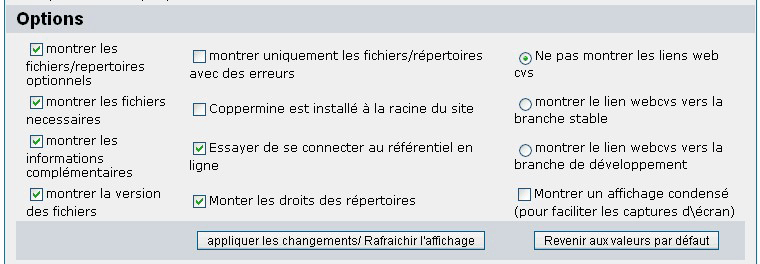
- montrer les fichiers/répertoires optionnels
Décochez cette option pour cacher les fichiers étiquetés comme "optionel" (n'affiche que les fichiers necessaires) - Montrer les fichiers necessaires
Décochez cette option pour cacher les fichiers étiquetés comme "necessaires" (Attention ! décocher les deux options (fichiers optionnels et fichiers necessaires) va bien sur faire en sorte qu'aucun fichiers ne sera affiché) - Montrer les informations complémentaires
Séletcionne quelles informations afficher entre celles concernant votre installation de Coppermine et celles du référentiel en ligne. déselectionnez si vous faites une capture d'écran pour gagner de la place et réduire la dimension. - Montrer la version des fichiers
Sélectionne quelles informations complémentaires d'un fichier concernant la version mise en circulation dont vous disposez doivent être affichées. Lorsque vosu regardez le code source d'un fichier coppermine, la version du fichier est le nombre qui se présente ainsi: Id: index.htm,v 1.66 2004/08/26 04:42:19 gaugau Exp (dans cet exemple, la version du fichier est 1.66) - Montrer uniquementles répertoires/fichier avec des erreurs
Sélectionne l'affichage des fichiers qui ont des erreurs (option cochée). Activez cette option si vous voulez faire une capture d'écran et demander de l'aide sur le forum de Coppermine. - Coppermine est installé à la racine du site
Experimental: si tous vos fichiers sont affichés comme "non-existant", vous avez probablement installé Coppermine à la racine de votre site, ou vous utilisez un sous-domaine. Cochez cette option uniquement si vous rencontrez ce problème. Cette option n'a pas été testée complêtement, Il n'est pas garanti qu'elle fonctionne sur votre installation. - Essayer de se connecter au référentiel en ligne
Détermine si le vérificateur de version doit essayer de se connecter sur le référentiel en ligne (coché par défaut). Décochez cette option uniquement si vous êtes sur de ne pas pouvoir acceder au référentiel en ligne à cause du paramêtrage de votre serveur et que vous voullez accélerer un peu le temps d'execution du script. - Montrer les droits des répertoires
Détermine s'il faut montrer/cacher les droits en écriture/lecture des répertoires. - Ne pas montrer le lien vers les webcvs / Montrer le lien webcvs vers la branche stable / Montrer le lien webcvs vers la branche de développement
Détermine quelle colonne supplémentaire montrer avec un lien vers le webcvs. N'utiliser que si votre version de Coppermine est correcte (vert), mais que la version de vos fichiers apparait dépassée. Vous pouvez vous connecter au webcvs pour trouver une version plus récente de votre fichier. Ne faire que si vous savez ce que vous faites (ou si celà vous a été demandé par un membre de l'équipe de support du forum d'aide de Coppermine). - Montrer une sortie condensée (pour faciliter les captures d'écran)
Lorsqu'elle est activée, cette option réduit la largeur des colonnes de comparaison de de version. Cela vous permettra de faire une capture d'écran de taille réduite.
3.5.3 Comparaison de version
Il y a une multitude d'informations données dans un minimum d'espace. Voici un exemple des possibilités de sorties et leur significations:
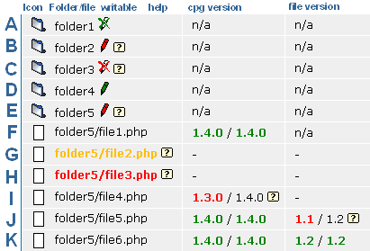
- Colonne "icone" montre si l'entrée est un répertoire ou un fichier. Cliquer sur l'icone vous conduira vers une page, exemple: en cliquant sur util.php vous sere conduit vers la page "outils d'administration" (bien que tous les fichiers Coppermine ne peuvent pas être ouverts en les executants directement depuis votre navigateur).
Dans l'exemple ci-dessus, les lignes "A" à "E" sont des répertoires, les lignes "F" à "K" sont des fichiers.
- Colonne "Répertoire/fichier" montre le chemin relatif de la racine de votre galerie Coppermine vers le répertoire/fichier en question.
Si une entrée est dans la couleur de police par défau, elle existe (dans l'exemple ci-dessus, toutes les lignes sauf "G" et "H").
Si l'entrée est en jaune (ligne "G"), le répertoire/fichier correspondant n'existe pas sur votre serveur, mais il est considéré comme optionnel (par exemple un fichier langage livré avec le pack Coppermine, que vous ne voulez pas utiliser peut être effacé de votre serveur. Il sera montré en jaune, mais il n'est pas necessaire au bon fonctionnement de la galerie). C'est a vous de voir si vous en avez besoin.
Si l'entrée est en rouge (row "H"), le répertoire/fichier en question n'existe pas sur votre serveur, mais il est necessaire au fonctionnement de Coppermine. Il faut que vous téléchargiez ce fichier depuis votre package Coppermine vers votre serveur. Ne laisser votre configuration telle quelle uniquement si vous savez ce que vous faites.
- La colonne "incriptible" montre si le répertoire en question est inscriptible, et aussi si c'est correct. les droits en écriture pour les fichiers ne sont pas affichés, cela ralentirais énormément le script. Généralement, il y a une icone qui montre le statut 'inscriptible' pour les répertoires (à condition que l'image de l'icone soit présente sur votre serveur). Sinon, un texte entre parentèses ets visible (si vous n'avez pas l'image de l'icone).
- Un crayon blanc avec un "x" vert ; indique quele le répertoire n'est inscriptible et n'est pas supposé l'être - tout est bon (ligne "A")
- Un crayon vert indique que le répertoire est inscriptible et qu'il est bien supposé l'être - tout est bon (ligne "D"
- Un crayon blanc avec un "x" rouge ; indique que le répertoire n'est pas inscriptible, mais devrait l'être (ligne "C"). Vous devriez changer les droits en écriture (CHMOD) pour ce répertoire et tout ce qu'il contient, habituellement en utilisant votre client FTP .
- Un crayon rouge indique que le répertoire est inscriptible, mais ne devrait pas l'être (ligne "E"). Avoir des fichiers inscriptibles peut être un risque pour la sécurité. Si possible, vous devez changer les droits de ce répertoire et de tout ce qu'il contient en écriture/execution uniquement.
- Un point d'intérrogation dans une boite jaune (icone d'aide) indique que des informations complémentaires sont disponibles. Cliquez sur cette icone pour ouvrir une fenêtre avec ces informations.
- La colonne "cpg version" affiche de quelle version de Coppermine est issu le fichier sur votre serveur, et quelle devrait être sa version. L'information est extraite de l'entête du fichier, c'est la raison pourquoi les répertoires sont marqués comme "n/a" - il n'y a pas d'entête contenant d'informations concernant la version de coppermine (lignes "A" à "E").
Les fichiers contenant des informations dans leur entête sont affichés avec leur version sur votre serveur et avec la version du fichier du référentiel Coppermine, séparés par un slash ('/'). Il est possible que la version d'un fichier diffère de celle de votre pack Coppermine - Cela ne pose pas de problème aussi longtemps que les deux versions (la votre et celle du référentiel) sont compatibles (Elles s'affichent en vert) - dans l'exemple ci dessus: lignes "F", "J" et "K".
Bien sur, le num√©ro de version qui n'existe pas dans un fichier ne peut pas √™tre extrait, les lignes "G" et "H" ont un tiret √† la place du NÂ∞ de version de Coppermine. Si votre version de Coppermine est plus ancienne que celle du r√©f√©rentiel, votre version est affich√©e en rouge: Si c'est cas, vous n'avez probablement pas t√©l√©charg√© le bon fichier depuis votre pack Coppermine vers votre serveur (remplacez le fichier existant sur votre serveur) - vous devriez faire ainsi l√†: (ligne "I").
Si votre version locale est affichée en jaune, vous utilisez un fichier dont la version est plus récente que le reste de vos fichiers - vous avez probablement téléchargé le fichier depuis la branche en développement: rappelez vous qu'il n'y a pas de support pour les fichiers en cours de développement, faites ainsi à vos risques et périls (si vous savez ce que vous faites). Si la majorité de vos fichiers sont affichés en jaune, vous avez probablement mis à jour plusieurs fichiers, mais vous avez oublié de mettre à jour le fichier "include/init.inc.php" (qui contient les informations de version pour votre installation de Coppermine). assurez vous de télécharger tous les fichier depuis le pack vers votre serveur.
-
La colonne "Version de fichier" contient la version individuelle de chaque fichier qui augmenteras au fur et a mesure du d√©veloppement d'une nouvelle version de Coppermine (√† chaque fois qu'un d√©veloppeur modifie un fichier, le num√©ro de version augmente d'une unit√©). Comme les r√©pertoires ne contiennent pas de numeros de version similaires, ils sont √† nouveau √©tiquet√©s comme "n/a" (lignes "A" √† "E"); Il en est de m√™me pour les fichiers qui n'existent pas, c'est pourquoi le NÂ∞ de version est repr√©sent√© par un tiret (lignes "G" et "H"). Aussi le NÂ∞ de version de fichier est hors de propos lors de la comparaison de fichiers provenant de packs Coppermine diff√©rents, c'est pourquoi la ligne "I" est contient un tiret.
Le système de couleur est le même que pour la version de Coppermine: vert signifie que "tout est OK", rouge signifie que "vous utilisez une version dépassée" et jaune signifie que "vous utilisez une version plus récente que celle supposée.
La différence entre les colonnes 'version de Coppermine' et 'version de fichier' est la manières de trouver quel fichier est supposé remplacer l'existant sur votre serveur: rouge pour la colonne de version de Coppermine signifie que le fichier sur votre serveur n'a pas été remplacé par le fichier du pack Coppermine; rouge pour la colonne de version de fichier (ligne "J") signifie généralement qu'il y a eu une mise à jour de certains fichiers dans le pack depuis sa mise à disposition - Vous devriez véridier qi il n'y a pas un nouveau pack disponible ou charger le fichier le plus récent depuis le CVS (activez le lien vers le webcvs dans les options du vérificateur de version ).
- La colonne "web cvs" (désactivée par défaut) conduit vers le fichier correspondant dans le CVS. Il est recommendé d'utiliser celà uniquement si il apparait qu'il y a une nouvelle version du fichier dans le cvs que celle de votre pack Coppermine et si vous savez ce que vous faites.
4. Configuration et Administration
4.1 Categories, albums et fichiers
La Galerie Photo Coppermine (CPG) fonctionne de cette manière:
- Le fichiers sont placés dans des albums
- Les albums sont organisés en catégories
- Les catégories peuvent être imbriquées (sous-categories)
Si vous n'avez pas beaucoup d'albums, vous n'avez pas besoin d'utiliser de catégories. Dans ce cas, vous ne créez aucune catégorie et tous les albums apparaitrons sur la page principale.
Il y a une catégorie spéciale nommée "User galleries". Cette catégorie ne peut pas être effacée. Si un utilisateur appartiens à un groupe où "peut avoir une galerie personnelle" est parametré sur OUI, il a le droit de créer ses propres albums et sa galerie sera une sous-catégorie de "User galleries".
L'administrateur peut créer des albums dans n'importe quelle catégorie. Les utilisateurs réguliers peuvent uniquement créer leurs albums dans "User galleries/Leur_nom_utilisateur".
Pour renommer la catégorie "User galleries" et sa description, allez simplement vers le panneau de gestion des catégories et changez les (par exemple pour traduire les mots "User galleries" dans votre langue).
4.2 Mode Administrateur et mode Utilisateur
Lorsque vous êtes identifié en tant qu'administrateur, le script a deux mode de fonctionnement : Le mode Administrateur et le mode Utilisateur. Vous basculez entre le mode Administrateur et le mode Utilisateur en cliquant sur le lien correspondant dans le menu en haut de page.
Lorsque vous êtes en mode administrateur, vous pouvea gérer votre galerie et le menu suivant apparait:
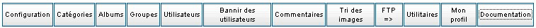
Si vous êtes en mode utilisateur et vous gardez le status d'administrateur, mais les controles d'administration (la barre de menu administrateur etc...) sont cachés de manière à donner l'impression que la page est similaire à celle que verrait un "utilisateur normal". Toutefois (tant que vous êtes identifiés en tant qu'administrateur), vos droits en mode utilisateur sont les mêmes qu'en mode administrateur; vous ne pouvez pas utiliser le "Mode Utilisateur" pour vérifierce qu'un non administrateur verra; pour cela, créez un compte utilisateur test (non-administrateur) et identifiez vous avec cet utilisateur particulier (il est recommendé d'utiliser deux navigateurs différents, afin de pouvoir vous identifier en tant qu'utilisateur "normal" et administrateur en même temps).
Les onglets du menu administrateur s'expliquent par eux mêmes:
- Approbation de téléchargement
Visualise toutes les images attendant l'approbation de l'administrateur (suivant le parametrage dans "groupes du " panneau de configuration) - Configuration
Gère l'ensemble de l'apparence de la galerie et les paramètres utilisés dans panneau de configuration du menu administrateur "Configuration" (Avertissement: vous ne pouvez pas acceder à la configuration en entrant manuellement l'adresse du fichier de configuration) - Categories
Créer/Modifier/Effacer les categories - Albums
Créer/Modifier/Effacer les albums - Groups
Créer/Modifier/Effacer les groupes - Users
Créer/Modifier/Effacer les utilisateurs - Bannir des Utilisateurs
Bannir des utilisateurs en se servant du nom d'utilisateur ou de l'adresse IP. Attention de ne pas vous bannir vous même! Utilisez cette possibilité avec beaucoup de précaussions, depuis que la majorité des utilisateurs ont une adresse IP statique, cette fonction doit être utilisée uniquement si vous savez vraiment ce que vous faites.
[cpg1.3.0 ou supérieur requis] - Examiner les commentaires
modifie/efface le commentaires de sutilisateurs/li> - Afficher les E Cartes
Visualiser les cartes électroniques envoyées par les utilisateurs.
Vous devez activer d'abord l'enregistrement des Cartes (ecard-logging) dans la configuration (par défaut, logging est désactivé). Lorsque l'option est activée, toutes les E cartes envoyées sont stockées dans la base de donnée, ou l'administrateur de coppermine peut les visualiser.
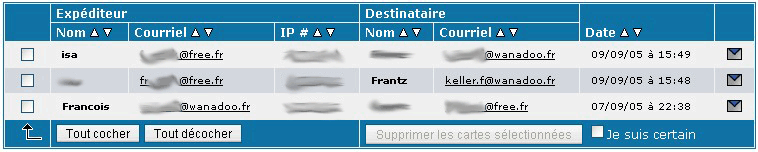
Vous pouvez trier les enregistrements en cliquant sur les icones en forme de flèches dans chaque entête de colonne, et vous pouvez effacer un où plusieurs enregistrements (effacer les enregistrement n'empechera pas le destinataire de la carte de la visualiser).
Avant de cocher cette option, vérifiez que l'enregistrement de ces données est autorisée dans votre pays. Il est recommandé de signaler aux utilisateurs que toutes les cartes électroniques seront enregistrées (de préférence sur la page d'enregistrement).
[cpg1.3.0 ou supérieur requis] - Trier mes images
Le gestionnaire d'images peut servir à trier de façon parsonnalisé les images à l'intérieur des albums. Par défaut, les vignettes sur la page de l'album sont triées suivant l'ordre défini dans "Tri par défaut pour les fichiers" sur la page de configuration. L'option "Trier mes images" prends le dessus sur cette option par défaut et affiche les vignettes suivant l'ordre que vous aurez spécifié. Comme celà suppose un travail supplémentaire lors de la maintenance de chaque album, il est recommandé d'utiliser l'ordre de tri par défaut et(au lieu de spécifier un ortre de tri presonnalisé) de nommer les fichiers judicieusement avant de les placer dans votre galerie.
Note: Chaque utilisateur (y compris l'administrateur) peut utiliser le controle de l'odre de tri sur les vignettes des albums pour remplacer manuellement l'ordre défini dans la configuration de Coppermine avec l'option "Trier mes images"; la dernière méthode de tri sera stockée localement dans un cookie chez le client.
- Ajouts de fichiers en traitement par lot
Ajouter par lot dans la base de donnée de coppermine les fichiers téléchargés via le FTP. - Outils d'administration (redimenstionnement des images)
Collection d'utiliatires pour:- Reconstruire ou redimentionner les images intermédiaires ou les vignettes.
- Effacer les images originales (grande taille).
Utilisez cette fonction pour gagner de la place sur votre serveur.
Si cette option est sélectionnée, Coppermine vérifie si il existe une image intermédiaire, et si c'est le cas, efface l'image originale, puis renomme l'image intermédiaire. Si l'image intermédiaire n'existe pas, Coppermine laisse l'original en place.
- Effacer les commentaires orphelins.
- Parfois, si des images ont été effacées, certains commentaires associés restent dans la base de donnée. Utilisez cette fonction pour les effacer entièrement de la base de donnée.
- Renommer le titre des fichiers.
- Utilisez cette fonction pour renommer l'intitulé de tous le fichiers dans les albums, en utilisant les informations du nom de fichier.
- Effacer les titres des fichiers.
- Utilisez cette fonction pour effacer les titres des fichiers d'un ou de plusieurs albums.
- affichez le php info de votre serveur.
- Si vous rencontrez des problèmes, c'est parfois à cause du parametrage de votre serveur. Ciquer sur ce lien vous fournira toutes les indications sur le parametrage de votre Php et mySQL, ainsiq eu sur votre libarire GD (si elle est installée). Cela peut être utilse à l'équipe de support, si vous n'êtes pas en mesure de résoudre vous même le problème.
Il n'est pas possible pour les visiteurs de votre site de visualiser ces informations, donc, si on vous le demande, faites un copier/coller des ces informaations sur le forum d'aide. - Lancez la mise à jour de la base de donnée (update.php).
- Après une mise à jour, il est généralement necessaire de lancer update.php. Cela peut être fait en entrant directement l'adresse dans votre navigateur, ou en cliquant sur ce lien.
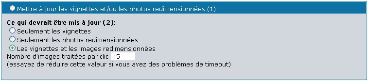
Utilisez cette fonction si vous avez changé le paramètrage pour les images intermédiaires ou les vignettes dans la configuration, ou si vous avez remplacé une version corrompue.
Delectionnez le bouton radio pour cette action, puis choisissez de reconstruire les vignettes, les images intermédiaires, ou les deux.
Cette fonction utilise beaucoup de ressources serveur, si vous rencontrez des problèmes de 'timeout', essayez de traiter de plus petits lots d'images.
- Mon Profil
Modifiez votre propre profil utilisateur
Il y avait un mode administrateur et un mode utilisateur pour les utilisateurs "normaux" dans les versions antérieures à cpg1.4.x, qui a été suppimée car il était "embrouillant" pour des utilisateurs et n'a pas atteint son objectif.
L'utilisateur enregistré a ces options:
- Créer/Trier mes albums
similaire au gestionnaire d'albums du mode administrateur, l'utilisateur peut créer des albums dans sa galerie utilisateur - Modifier mes albums
L'utilisateur peut modifierles titre et la description de ses albums (similaire à "propriétés de l'album" pour l'administrateur, mais l'utilisateur ne peut pas déplacer ses albums vers d'autres catégories) - Mon profil
L'utilisateur peut modifier son profil (changer de mot de passe, sa localisation, ses centres d'intérêts, l'adresse de sont site et sa profession, voir son quota d'utilisation du disque). Si vous avez intégré Cpg avec un forum, le lien "Mon profil" vous dirigera vers la page des profils utilisateur du forum.
4.3 Le panneau de gestion des groupes
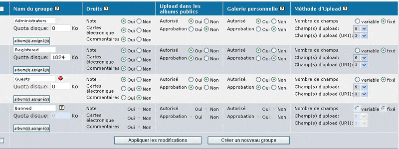
C'est là que vous pouvez définir ce que les membres des groupes peuvent ou ne peuvent pas faire.
Le quota disque ne s'applique que pour les groupes où "Galerie pesrsonnelle" a été paramétré sur "Autorisé". L'ensemble des fichiers téléchargés dans sa galerie personnelle par un utilisateur ainsi qu eles fichiers téléchargés dans les galeries publiques sont pris en compte dans ce quota.
Utilisez le groupe anonymous pour déterminer ce que les utilisateurs non enregistrés peuvent ou ne peuvent pas faire. Quota et "Galerie personnelle" n'ont pas de sens pour les utilisateurs non enregistrés.
Droits contrôle ce que l'utilisateur est autorisé à faire dans la galerie (Voter/Envoyer des Cartes/Poster des commentaires).
Rappelez vous que si un utilisateur est membre d'un groupe où "Voter", "Commentairess" ou "Télécharger dans les albums publics" est parametré sur "OUI", il n'aura le droit d'effectuer ces opérations que dans les albums ou cela est autorisé, Par exemple: télécharger des fichiers ne sera possible que dans des albums ou "Les visiteurs peuvent télécharger des fichiers" est parametré sur OUI.
Si "Galerie personnelle" est parametré sur Autorisé, le membre du groupe pourra avoir sa propre galerie dans la catégorie "User galleries" et dans laquelle il aura la possibilité de créer ses propres albums.
Si "Approbation" est parametré à NON, les fichiers téléchargés par le membre du groupe dans les albums crées dans sa propre galerie n'ont pas besoin de l'approbation de l'administrateur. If "Approval" si parametré à OUI, l'utilisateur de ce groupe particulier pourra télécharger des fichiers, mais ceux ci ne pourront être vus qu'après approbation de l'administrateur.
Le panneau de contrôle des groupes vous permets de controler les possibilités de téléchargements de chaque groupe.
Methode de téléchargement vous permets de sélectionner le type de téléchargement qu'un groupe peut utiliser. Quatres possibilités sont offertes.
- Téléchargement d'un seul fichier - Le groupe ne peut pas utiliser les possibilités avancées de téléchargement. Ils ne peuvent télécharger qu'un seul fichier à la fois. Pour activer le mode de téléchargement d'un seul fichier, parametrez champs d'upload sur "1", champs d'upload URI sur "0" et Nombres de champs sur "fixe"
- Multiple téléchargements - le groupe peut télécharger plusieurs fichiers en même temps. Pour activer le téléchargement multiple, mettez champs d'upload sur un nombre suppérieur à "1", champs d'upload URI à "0" - libre à vous de laisser l'utilisateur fixer lui même le Nombre de champs, mais il est recommandé de le parametrer à "fixe" pour éviter une confusion.
- URI upload seulement - Le groupe ne peut télécharger des fichiers qu'en utilisant les URIs. les URIs doivent commencer par 'http://' ou 'ftp://'. Pour activer URI uploads seulement, mettez Champs d'upload to "0", Champs d'upload URI to "1" ou plus.
- Fichiers-URI - Le groupe peut utiliser les fichiers ou les URIs pour le téléchargement. Pour activer les deux options, mettez Champs d'upload sur "1" ou plus, Champs d'upload URI sur "1" ou plus
Nombre de champs sélectionné sur "variable" permet à l'utilisateur de choisir le nombre de champs d'upload pour un téléchargement. généralement, vous laisserez cette option sur "fixe", du fait qu'il propose à l'utilisateur une étape supplémentaire dans l'assistant de téléchargement qui n'est pas obligatoirement necessaire.
Champs d'upload controle le nombre de champs d'upload présentés à l'utilisateur. Si l'utilisateur peut personnaliser le nombre de champs (Nombre de chamsp mis sur "variable"), ce parametrage donne le nombre maximum de champs que pourra choisir l'utilisateur. Sinon, ce parametrage détermine le nombre de champs d'upload apparents.
Champs d'upload URI propose le même type de contrôles que Champs d'upload, mais il controles l'affichage des champs de'ulpoad URI.
Notez bien: pour une installation non bridgée (Coppermine autonome), le groupe "banned" n'a aucun effet. Un utilisateur qui est membre de ce groupe peut s'identifier et voir les images, il lui est seulement impossible de télécharger, voter, envoyer des cartes électroniques ou poster des commentaires. Si vous voullez faire un vrai bannissement pour certains utilisateurs, vous devrez utiliser la fonction "bannir un utilisateur" à la place (non relié avec le groupe "banned").
4.4 Le panneau de gestion des utilisateurs
Le panneau de gestion des utilisateurs est accessible en cliquant sur le boutton "utilisateurs" du menu administrateur. C'est l'endroit ou vous pouvez créer et gérer les utilisateurs.
Si vous aves activé l'intégration (bridge) de Coppermine avec une autre application (votre forum par exemple), Coppermine utilisera la tables des membres de cette application, et donc, la gestion d'utilisateurs intégré à Coppermine sera désactivée en faveur de celle de l'application bridgée avec Coppermine.
Vous n'aurez donc pas cette page de gestion des utilisateurs; en cliquant sur le lien "utilisateurs" vous serez dirigé vers la page de gestion des utilisateurs de votre application bridgée avec Coppermine.
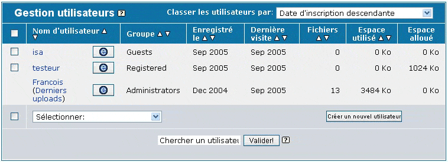
4.4.1 Commandes de la page
- Vous pouvez choisir l'ordre de tri sur l'affichage de la page en cliquant sur les icônes en forme de flèche () à côté de chaque entête de colonne ou en choississant l'ordre de tri dans le menu déroulant en haut à droite de la page.
- Si vous avez plus de 25 utilisateurs, des liens de navigation apparaitrons en bas à droite de la page, vous permettant d'acceder aux autres pages de la liste de vos membres
- Cliquer sur le nom d'utilisateur affichera la page de profil de l'utilisateur sélectionné (lercture seulement)
- L'icone d'édition (
 ) vous conduira vers la page de profil de l'utilisateur en mode édition - vous pouvez modifier le mot de passe, l'adresse Email et d'autres parametrages concernant l'utilisateur ici
) vous conduira vers la page de profil de l'utilisateur en mode édition - vous pouvez modifier le mot de passe, l'adresse Email et d'autres parametrages concernant l'utilisateur ici - Si l'utilisateur a téléchargé des fichiers, un lien "Téléchargements récents" sera visible à côté de son nom, permettant de visualiser les fichiers téléchargés par cet utilisateur en particulier
- La colonne groupe affiche le groupe initial dont l'utilisateur est membre
- La colonne "Enregistré le" montre la date ou l'inscription de cet utilisateur à eu lieu
- La colonne "dernière visite" affiche la date de la dernière connection de l'utilisateur.
Attention: si l'utilisateur à coché la case "Se souvenir de moi" sur la page d'identification, il n'aura pas besoin de s'identifier à chaque visite sur la galerie. - La colonne "Fichiers" affiche combien de fichiers l'utilisateur à téléchargé pour l'instant (y compris ceux attendant l'approbation de l'administrateur)
- La colonne "Espace utilisé" affiche combien d'espace aloué à l'utilisateur est déjà utilisé. L'espace total alloué à l'utilisateur ("Quota d'espace") dépend des groupes d'utilisateurs - vous les parametrez dans le Gestionnaire de groupes.
- Vous pouvez changer certains parametrages pour différents utilisateurs immédiatement en cochant la boite de sélection devant la ligne de l'utilisateur (utilisez la boite de sélection tout en haut de la page pour sélectionner/déselectionner tous les utilisateurs sur la page) et choisissez l'action à lancer depuis le menu déroulant "sélectionner" en bas à gauche de la page. Les actions possibles sont: "Effacer", "Désactiver", "Activer", "Changer le mot de passe", "Changer le groupe principal" et "Ajouter un groupe secondaire". L'utilisateur actuellement connecté (vous en tant qu'administrateur) n'a pas de boite de sélection devant sa ligne afin d'éviter un effacement accidentel de votre compte administrateur.
4.4.2 Chercher un(des)utilisateur(s)
Vous pouvez utiliser les jokers * (toutes les chaines) and ? (tout caractère simple) ou même %expression%.
Exemple: une recherche sur j* retournera les deux: Jack et Jill
4.4.3 Créer de nouveaux utilisateurs
Pour créer un nouvel utilisateur, cliquez simplement sur le bouton "Créer un n ouvel utilisateur" au bas de la page et completez le formulaire qui apparaitra.
4.5 Le panneau de gestion des catégories
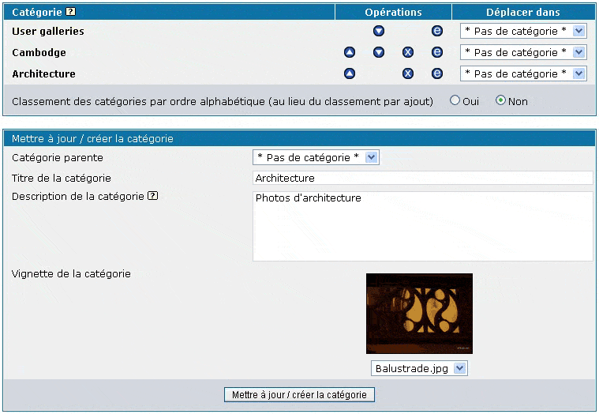
C'est la que vous pouvez éditer vos catégories.
- Le bouton vous permets de modifier le titre, la description et la catégorie parents d'une catégorie existante.
- Le bouton vous permets d'effacer une catégorie. Effacer une catégorie n'efface pas les albums et les fichiers contenus. Ils sont simplement déplacés dans la catégorie "Racine".
- Les boutons et permettent de changer l'ordre des catégories.
- La liste déroulante "Déplacer dans" vous permets de changer la catégorie parente d'une catégorie spécifique.
"User galleries" est une catégorie spéciale. Elle n'est pas visible sauf si certains utilisateurs ont créer leur propre galerie. Elle ne peut pas être effacée mais vous pouvez modifier son titre et sa description en utilisant le bouton .
Vous pouvez spécifier à Coppermine de trier toutes les catégories par ordre alphabétique (au lieu d'un ordre personnalisé) en parametrant "Classement des catégories par ordre alphabétique" sur "OUI". Ce parametrage est disponible dans la page de configuration de Coppermine et dans le gestionnaire de catégories. Si vous activez le classement par ordre alphabétique, les flèches "hau" et "bas" qui vous permettent normalement de déplacer les catégories ne sont plus affichées.
4.6 Le gestionnaire d'Albums
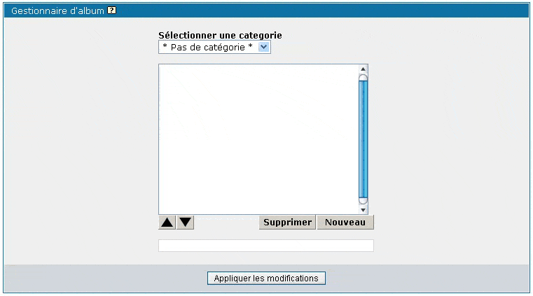
Coppermine stocke les fichiers dans des albums, vous avez donc besoin d'au moins un album pour y placer vos fichiers/photos. Les albums peuvent être regroupés dans des catégories (mais vous n'avez pas besoin de catégorie, ils peuvent aussi être placés à la "racine" de Coppermine).
Lorsque cous cliquez sur "Albums" dans le menu Administrateur, vous accédez au gestionnaire d'album.
4.6.1 Créer des albums
- Choisissez depuis la liste déroulante "Sélectionner une catégorie category" la catégorie dans laquelle placer l'album (ou choisissez "* Pas de Catégorie *" si l'album doit être placé à la "racine" de Coppermine). Si vous n'avez pas encore crée de catégorie, allez au panneau de gestion des catégories d'abord, mais vous pouvez déplacer par la suite l'album en utilisant la page propriétés de l'album.
- Cliquez sur le bouton "Nouveau" - votre nouvel album apparaitdans la listet, avec par défaut le nom "Nouvel album"
- Cliquez sur le champ texte au bas de l'écran, sélectionnez le nom par défaut "Nouvel Album"
- Entrez le nom que vous voulez lui donner
- (répetez les étapes 2 à 4 pour ajouter plus d'un album)
- Cliquez sur "Appliquer les modifications" pour soumettre vos changements à la base de donnée (si vous ne le faites pas, toutes vos modifications seront perdues)
- Confirmer en cliquant sur "OK" dans la fenêtre d'alerte (Etes vous sur de vouloir faire ces modifications ?)
4.6.2 Renommer les albums
- Choisissez une catégorie dans la liste déroulante
- Cliquez sur l'album à modifier
- Cliquez sur le champ teste au bas de l'écran, sélectionnez le nom de l'album
- Entrez le nouveau nom de l'album
- Cliquez sur "Appliquer les modifications"
- Confirmer en cliquant sur "OK" dans la fenêtre d'alerte (Etes vous sur de vouloir faire ces modifications ?)
4.6.3 Changer l'ordre des albums
- Choisissez une catégorie dans la liste déroulante
- Cliquez sur l'album que vous voulez monter ou descendre dans la liste
- Utilisez les flèches pour déplacer l'album vers le haut ou vers le bas
- Cliquez sur "Appliquer les modifications"
- Confirmer en cliquant sur "OK" dans la fenêtre d'alerte (Etes vous sur de vouloir faire ces modifications ?)
4.3.4 Effacer des albums
- Choisissez une catégorie dans la liste déroulante
- Cliquez sur l'album que vous voulez effacer
- Cliquez sur le bouton "Supprimer"
- Confirmee en cliquant sur "OK" dans la fenêtre d'alerte (Etes vous sur de vouloir effacer cet album ? Tous les fichier et commentaires qu'il contenait seront perdus !)
- Cliquez sur "Appliquer les modifications"
- Confirmer en cliquant sur "OK" dans la fenêtre d'alerte (Etes vous sur de vouloir faire ces modifications ?)
4.7 Modifier les albums/fichiers
Si vous êtes en mode administrateur, un menu est affiché à côté de chaque album
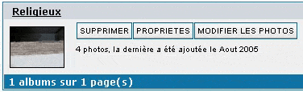
Supprimer permets de supprimer l'album ainsi que tous les fichiers qu'il contient.
Propriétés vous permets de modifier le nom, la description et les droitsde l'album
Modifier les photos vous permets de modofoer les titres/légendes/mots-clés etc... des fichiers dans l'album
4.8 Propriétés de l'album
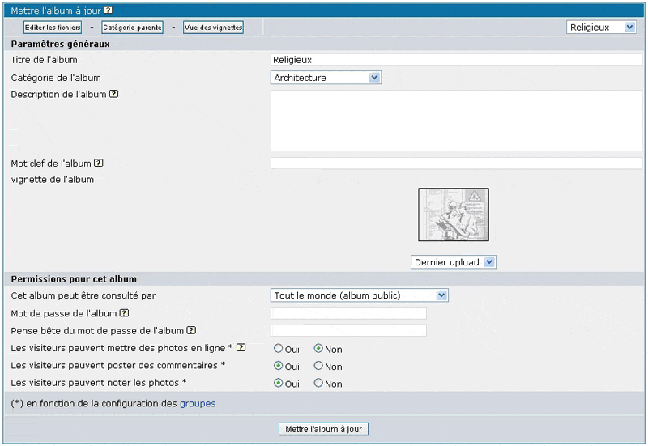
La liste déroulante "Catégorie de l'album" vous permets de déplacer l'album entre les catégories. Si vous le mettez sur "* Pas de catégorie *" l'album apparaitra sur votre page principale.
Utilisez les bbcode pour ajouter des liens ou pour formater la description.
La vignette est l'image qui représentera cet album dans la liste des albums.
Si vous avez parametré "Les utilisateurs peuvent avoir des albums privés" sur OUI dans la page de configuration, vous pouvez définir qui peut voir les fichiers de cet album.
Si "les visiteurs peuvent mettre des photos en ligne" est parametré sur OUI, il est possible de télécharger des fichiers dans cet album.
Attention: Un visiteur peut avoir le droit de télécharger des fichiers dans cet album ou cette option est parametrée sur OUI uniquement si il est membre d'un groupe où "peut télécharger des images" est parametré sur OUI. Les utilisateurs non enregistrés sont membres du groupe "Anonymous".
Les mêmes règles s'appliquent pour "Les visiteurs peuvent poster des commentaires" et "les visiteurs peuvent noter ce fichier".
Le Mot-clé de l'album n'est pas utilisé dans un but de recherche, mais pour afficher des images d'autres albums dans celui-ci. En utilisant cette métode, les fichiers/images peuvent être dans plusieurs albums alors qu le fichier lui même nexiste qu'une seule fois sur votre serveur: vous téléchargez le fichier dans un album et lui assignez un ou plusieurs mots-clé. Puis allez dans les propriétés de l'autre album et ajoutez les mots-clé assignés au fichier dans le champ "mots clé de l'album" du deuxième album. Pour le visiteur de cet album, ce sera comme si les fichiers/images étaien présents dans les deux albums.
Mot de passe de l'album: vous pouvez proteger l'accès à un album par mot de passe (au lieu de se baser sur les droits "normaux" des groupes). Par ce moyen, vous pouvez permettre l'accès à des utilisateurs non enregistrés (invités) qui connaissent le mot de passe. Utilisez cette option pour paramêtre un album pour les membres de votre famille en déterminant un mot de passe qu'eux seuls peuvent connaître grace à une question pense bête suggérant la réponse (par exemple "Quel est le nom de jeune fille de tante Ursule?"), ou vous pouvez décider d'envoyer le mot de passe particulier par Email uniquement à vos amis. La question opptionnelle pense bête est affichée à côté du champ demandant le mot de passe, si elle est définie.
Attention: en définissant un mot de passe pour un album, le champ de la liste déroulante "L'album peut être vu par" sera placé automatiquement sur "seulement moi" - C'est le comportement normal. Si vous changez "l'album peut être vu par" par quelque chose d'autre, vous devrez bien sur désactiver le mot de passe de l'album.
4.8.1 Réinitialisation des propriétés de l'album
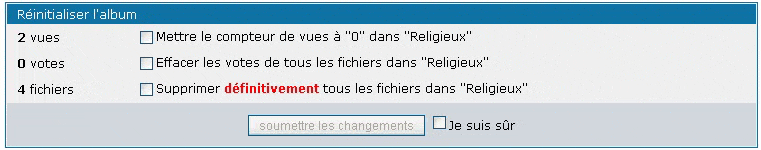
Vous pouvez réinitialiser le compteur de vue et de votes dans l'album et même effacer toutes les images en même temps, dans la sous-section "Réinitialiser l'album" en cochant les options et en soumettant le formulaire. Pour éviter les réinitialisations accidentelles, vous devez d'abord cocher l'option "Je suis sur" avant de pouvoir soumettre les changements (Le bouton est grisé si vous ne le faites pas).
Utilisez cette option avec prudence: La suppression de fichiers est irreversible, de même que les compteurs de vue et de votes (vous pouvez uniquement restaurer le compteur de vues et de notes manuellement en éditant les entrées de la base de donnée de Coppermine avec un outil extérieur tel que phpMyAdmin - non recommandé).
4.9 Edition des fichiers
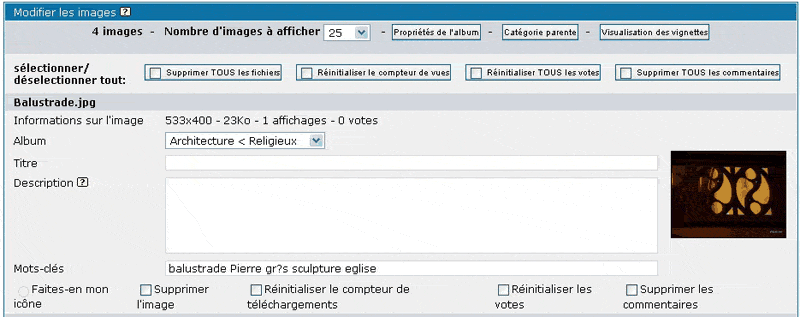
C'est là que vous pouvez modifier le titre, la description, les mots clé et les champs personnalisés(si ils sont utilisés) d'un fichier.
Utilisez le menu déroulant pour déplacer le fichier vers un autre album.
4.9.1 Editing videos
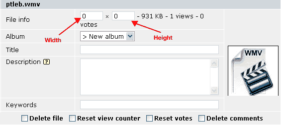
C'est là que vous pouvez modifier le titre, la description, les mots clé et les champs personnalisés(si ils sont utilisés) d'un fichier.
Utilisez le menu déroulant pour déplacer le fichier vers un autre album.
Utilisez les champs hauteur et largeur pour parametrer la taille des vidéeos.
La mise en ligne de vidéeos est possible depuis cpg1.3.0 (ou suppérieur) et comme ajout pout cpg1.2.1 sous forme de modification.
[cpg 1.3.0 ou supérieur requis]
4.9.2 Vignettes personnalisées
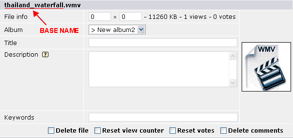
Orde des vignettes:
Les vignettes sont sélectionnées par niveau (défini par l'utilisateur, définies par le thème, global) puis par type (Type de fichier, extention de fichier, type de média) dans l'ordre. Les vignettes définies par l'utilisateur sont stockées dans le répertoire ou se trouve le fichier. Les vignettes définies par le thème sont stockées dans le répertoire 'images' du thème. Les vignettes globales sont stockées dans le répertoire 'images' de la racine de Coppermine. les vignettes peuvent être soit des 'gif', 'png', ou 'jpg'.
Types de vignettes:
Les vignettes spécifiques à un fichier doivent avoir le même nom de base que le fichier. dans l'exemple utilisé dans la capture d'écran, la vignettes pourrait être 'thumb_thailand_waterfall.gif', 'thumb_thailand_waterfall.png', ou 'thumb_thailand_waterfall.jpg', dans cet ordre.
Les vignettes spécifiques à une extention de fichier sont nommées après l'extention du fichier. (Exemples: 'thumb_wmv.jpg', 'thumb_wav.jpg'.)
Les vignettes spécifiques à un type de média sont 'thumb_movie', 'thumb_document', and 'thumb_audio'. Les photos utilisent par défaut les vignettes spécifiques au fichier.
Mise en ligne:
Il y a 2 manières de mettre en ligne les vignettes personnalisées:
1. Ayez une image déjà en ligne puis téléchargez une vidéo via la page de téléchargement. (ou vice versa) La vidéo partagera la vignette de l'image.
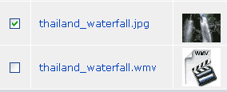
2. Téléchargez par FTP les deux: vidéo et vignette/image puis mettez les en ligne par lot. Si vous téléchargez par FTP la vignette, elle sera montrée à la place de celle par défaut de Coppermine dans la page de traitement par lot. Si vous téléchargez une image, elle aura l'air d'une capture d'écran. De même, si les deux fichiers sont ajoutés, la vignette de l'imagesera utilisée par la vidée.
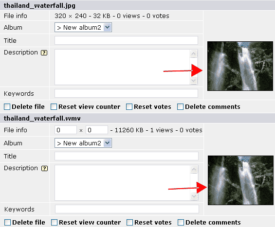
Résultat final.
Attention: Si la methode 1 est utilisée et l'image effacée, la vignette sera elle aussi effacée, et la vignette par défaut de Coppermine sera utilisée.
Si une vidéo a été précédemment mise en ligne via le FTP, la vignette doit être téléchargée par le FTP dans le même répertoire.
La mise en ligne de vidéeos est possible depuis cpg1.3.0 (ou suppérieur) et comme ajout pout cpg1.2.1 sous forme de modification. Les vignettes personnalisée ne sont pas supportées par les versions antérieures à 1.3.0. En suivant ces instructions, une vignette personnalisée peut être définie pour ous les fichiers, pas uniquement pour les vidéos.
FAQS:
- QuoteJ'ai une vidéo nommée 'movie.wmv', quand je télécharge une vignette pour elle nommée 'thumb_movie.jpg' elle remplace plusieurs vidéos!!!!Oulà!!!. 'thumb_movie.jpg' est une vignette spécifique à un type de média. Renommez la vidéo et sa vignette autrement que juste 'movie'.
- QuoteJe ne trouve pas les répertoires de mes utilisateurs!Depuis Coppermine, recherchez l'album utilisateur. Regardez l'adresse de la page dans la barre d'adresse de votre navigateur et vousverrez le nom du répertoire. (Voyez la capture d'écran pour l'exemple.)
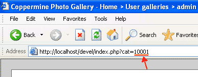
Vos utilisateurs peuvent télécharger leurs propres vignettes en utilisant cette astuce: Créez un album. Changez les droits afin que personne d'autre que luine puisse le voir. Puis téléchargez les images grandeur réelle des vignettes dans ce répertoire. Les fichiers hors de cet album sont en mesure d'utiliser les vignettes de ces images. (Regardez plus haut pour le nom.) - QuoteComment puis-je faire pour empêcher mes utilisateurs de créer leurs propres vignettes ?Pour l'instant, vous ne pouvez pas.
[cpg 1.3.0 ou supérieur requis]
4.10 Utilisation des "bbcode" pour inserer des liens et pour formater les textes des descriptions
Coppermine peut utiliser les bbCodes suivants (les mêmessbbCodes sont utilisées par phpBB ainsiq eu d'autres applications de type forums) dans les descriptions d'images ou d'albums
- [b]Gras[/b] => Gras
- [i]Italique[/i] => Italique
- [url=http://votresite.com/]Texte du lien[/url] => Texte du lien
- [email]utilisateur@votrehebergeur.com[/email] => utilisateur@votrehebergeur.com
- [color=red]du texte[/color] => du texte
- [img]http://coppermine.sf.net/demo/images/red.gif[/img] =>
4.11 Téléchargement des fichiers par FTP / Ajout d'images par lot
Il est recommandé aux administrateurs de galeries Coppermine d'utiliser le FTP pour mettre en ligne beaucoups d'images en une seule fois. Utilisez votre logiciel FTP pour créer des sous-répertoires dans votre_repertoirecoppermine/albums/, ou les téléchargements par FTP pourront être placés. C'est une bonne idée d'avoir une structure de répertoires dans le répertoire albums reflettant la structure de vos catégories et de vos albums dans la galerie Coppemrine, mais ce n'est pas obligatoire.
Important: do not create folders or upload to the userpics- nor the edit-folder by ftp: these folders are used by coppermine internally and mustn't be used for any other purpose! Folder names mustn't contain dots and it's even recommended not to use any special chars - only use a-z, numbers and maybe - or _. Make sure to upload in binary or auto-mode.
Après avoir téléchargé vos photos par FTP, cliquez sur le bouton FTP du menu administrateur. L'ajout par lot se fera en trois étapes:
- Trouvez le répertoire dans lequel vous avez téléchargé vos photos. Selectionnez le en cliquant dessus.
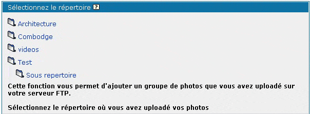
- Sélectionnez les photos que vous voulez mettre en ligne (en cochant la case à côté d'elles, les nouvelles images sont pré-sélectionnées, celles qui sont déjà dans la base de donnée de Coppermine ne le sont pas) et l'album dans lequel vous voullez les insérer. Cliquez sur "Placer les images sélectionnées" pour commencer le traitement par lot.
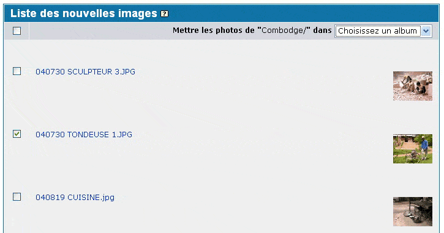
- Coppermine va afficher le résulta du traitement d'ajout par lot(patientez un peu avant que tous les résultats soient affichés).
Si les 'signes' OK, DP, PB n'apparaissent pas cliquez sur le lien cassé pour voir les messages d'erreur de PHP.
Si vous rencontrez un problème de 'timeout', rechargez la page depuis votre navigateur.- OK : signifie que le fichier a été placé avec succès
- DP : signifie que le fichier est un double et est déjà placé dans la base de donnée
- PB : signifie que le fichier n'a pas pu être ajouté, vérifiez votre configuration et les droits des répertoires ou les fichiers sont placés
- NA : signifie que vous n'avez pas sélectionné d'album où placer les fichiers, retournez en arrière et sélectionnez un album. Si vou sn'avez pas d'album, créez en un d'abord
Donner l'acc√®s FTP √† d'autres utilisateurs est un s√©rieux danger pour la s√©curit√©, c'est²la raison pour laquelle le traitement d'ajout par lots est uniquement possible pour l'administrateur de la galerie Coppermine.
Une fois que les fichiers ont été ajoutés dans la base de donnée de Coppermine, assurez vous de ne pas les renommer ou les effacer par le FTP - utilisez plutôt le menu administrateur de coppermine pour supprimer des fichiers, par ce biais, ils seront supprimés à la fois de la base de donnée et du système de fichiers.
4.12 Page de configuration de la galerie
C'est l'emplacement où vous pourrez configurer la plus grande part de votre galerie Coppemine. Certains paramètres ont un impact sur les fichiers que vous avez mise en ligne - changer ces options si vous avez déjà un grand nombre de fichiers en ligne peut être problématique, c'est pourquoi vous devriez réfléchir à ces paramétrages juste aprè sl'installation de votre galerie Coppermine, avant que vous ne mettiez en lignes des images ou que vous ne montriez votre galerie au public.
4.12.1 Paramètres généraux
Nom de la galerie
Il s'agit du nom de votre galerie. Il apparaitra dans le titre de vos pages et est affiché dans certains gabarits.
Description de la galerie
C'est une courte description de votre galerie. Cette description est montrée dans certains thèmes à côté du nom de votre galerie.
Courriel de l'administrateur de la galerie
Tous les courriels envoyés par la galerie sont envoyés à cette adresse. Vérifiez que vous avez bien entré une adresse valide.
URL du répertoire de votre galerie Coppermine
C'est l'adresse URL vers laquelle sera dirigé le visiteur qui clique sur le lien "Voir plus de photos" sur une carte postale électronique. Ce doit être l'adresse URL de votre galerie (juste le chemin vers votre répertoire Coppermine, par exemple: http://votresite.com/coppermine/). Ne précisez pas de fichier précis (comme index.php) dans ce champ.
Dans les versions antérieures de coppermine, ce champ était appelé "adresse cible pour le lien 'Voir plus de Photos' des cartes électroniques", mais depuis que cette URL est utilisée ailleur par Coppermine, son nom a changé.
URL de votre page d'accueil
C'est l'adresse URL vers laquelle le visiteur sera dirigé lorsqu'il cliqueras sur le bouton "Accueil" du menu principal.
Vous pouvez utiliser "/" pour la racine de votre site, "index.php" pour votre galerie, ou toute adresse URL valide.
[cpg1.4.0 ou supérieur requis]
Permettre le téléchargement-ZIP des favorits
Si cette option est activée, l'utilisateur peut télécharger un fichier ZIP contenant les fichiers qu'il a placé dans la page "Mes favorits". Cette otpion requière que la librairie zlib soit instéllée sur votre serveur (lancez phpinfo pour vérifier si cette librairie existe sur votre serveur).
[cpg1.3.0 ou supérieur requis]
Différence d'heure par rapport à l'heure GMT
Spécifiez la différence entre votre heure locale et l'heure de la zone ou se situe votre serveur. Cette valeur est utilisée pour corriger le cachet d'heure dans les cartes éléctroniques et à d'autres endroits.
[cpg1.4.0 ou supérieur requis]
Autoriser les mots de passe cryptés
Cette option est uniquement valable si les mots de passe utilisateurs sont stockés en textes entiers dans la base de donnée (habituellement c'est le cas si vous mettez a jour depuis une ancienne version de Coppermine qui n'avait pas cette option). Cela va crypter tous les mots de passe dans la base de donné, et tous les futurs mots de passe seront stockés cryptés eux aussi. Ce processus est irréversible: une fois que le cryptage est en place, il est impossible de le désactiver, utilisez cette option en connaisance de cause.
Cette option augmente la sécurité de Coppermine, mais il y a un inconvénient à cette methode: même l'administrateur ne peut pas retrouver un mot de passe perdu pour un utilisateur (ou le sien), le mot de passe peut seulement être réinitialiser à une autre valeur, mais l'administrateur ne peut pas lire l'actuel mot de passe d'un utilisateur.
[cpg1.4.0 ou supérieur requis]
Activer les icônes d'aide
Active l'affichage des icônes d'aide dans divers endroits des pages d'administration de Coppermine. Si vous activez cette option, assurez vous d'avoir téléchargé le répertoire "docs" dans le répertoire Coppermine sur votre serveur Web.
Si vous choissisez ce parametrage sur "Oui: Tout le monde", les utilisateurs enregistrés pourront voir les icônes d'aide à certains endroitsl, par exemple lors de la création d'une galerie utilisateur.
Comme le texte d'aide est basé sur la documentation livrée avec Coppermine, elle est disponible en Anglais (et ici en Français, peut être dans d'autres langues). Si la langue manternelle de vos visiteurs n'est pas la même que celle de la documentation que vous avez placé sur votre serveur, il est conseillé de mettre cette option sur "OUI: Uniquement l'administrateur" afin d'éviter les confusions chez vos visiteurs.
Il est fortement déconsséillé de désactiver totalement les icônes d'aide: même si vous pensez savoir tout ce qui se passe dans votre galerie Coppermine, Les icônes d'aides peuvent vous donnez des indications sur les actions d'une option spécifique.
[cpg1.4.0 ou supérieur requis]
Activer les mots-clé cliquables dans la recherche
Lorsque cetteoption est activée, une liste de tous les mots clé entrés dans la page "Editer les fichiers" sera affichée au bas de la page de recherche, chaque mot clé etant cliquable. L'activation de cette option est recommandée si vou sn'avez pas un trop grand nombre de mots clé (par exemple moins de 100) - celà donnera aux visiteurs une idée des recherches qu'il peut faire (en complément de la recherche depuis une phrase). Notez que l'activation de cette option pour une grande liste de mots clé (par exemple plusieurs centaines) va ralentir la page de recherche et risque d'embrouiller l'utilisateur débutant.
[cpg1.4.0 ou supérieur requis]
Activer les plugins
Activer les plugins. Cette fonction est toute neuve, il n'y a pas encore de documentation pour cette fonction.
[cpg1.4.0 ou supérieur requis]
Autoriser le bannissement d'adresse IP non routable (privé)
Habituellement, la plupart des utilisateurs de l'internet ont une adresse IP dynamique qui leur est assignée par leur fournisseur d'accès au moment de la connection. Cette adresse IP change à chaque fois que l'utilisateur se connecte à l'internet, mais, pendant une session internet, cette adresse IP est "visible" par les sites web sur lesquels l'utilisateur surfe. Dans l'étendue de tous les adresse IP (0.0.0.0 à 255.255.255.255), certaines plages sont réservées dans un but précis (essentiellement pour une utilisation en réseaux privés). La fonction de banissement n'accepte pas les adresses IP provenant de cette plage d'adresses privées (exemple: 192.168.0.1) afin d'éviter à des administrateurs de galeries Coppermine innexpérimentés de bannir des adresses IP de leurs propres réseaux. Si vous utilisez actuellement Coppermine sur votre LAN/WAN utilisant des adresse IP privées (par exemple l'intranet de votre entreprise) et que vous souhaitiez pouvoir bannir des utilisateurs, basculez cette option sur "OUI". Si vous utilisez coppermine depuis un serveur web sur l'internet(par exemple si vous avez un hébergeur), vous devriez placer cette option sur "Non".
Si vous n'utilisez pas le système de banissement, vou spouvez sans risque ignorer ce parametrage.
[cpg1.4.0 ou supérieur requis]
Interface de téléchargement par lot
Pour mettre en ligne par lot des fichiers (Que vous avez placés par FTP avant) dans votre galerie, vous devez choisir entre l'option d'une liste à parcourir, ou vous pourrez explorer la structure de votre répertoire albums, et d'afficher la structure complête de vos répertoires. Activez cette option si vous avez une structure complexe de répertoires et sous répertoires que vous voulez explorer (Votre navigateur doit être capable d'afficher les iframes). Parametrez cette option sur "Non" (désacticé) si vous voulez utiliser l'interface "classique" de coppermine qui montre en une fois l'ensemble de la structure.
Vous pouvez aussi basculer cette option sur la page de Téléchargement par lot .
[cpg1.4.0 ou supérieur requis]
4.12.2 Langue et jeu de caractères
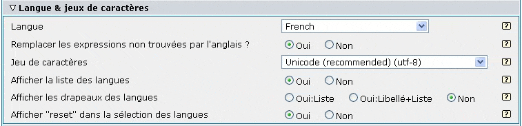
Langue
C'est la langue par défaut de votre galerie. Tous les fichiers langues sont stockés dans le répertoire lang sur votre serveur.
Les fichiers langues avec un suffixe "-utf8" sont des fichiers unicode . Si vous sélectionnez un fichier -utf8 comme language par défaut et que vous parametrez "encodage des caractères " sur "Unicode (utf-8)" le script détectera automatiquement la langue préférée du visiteur en se basant sur la configuration de son navigateur. Si le language correspondant existe, il sera utilisé sinon, c'est le language par défaut qui sera utilisé.
Si le script détecte automatiquement la langue préférée du visiteur, il stocke ce résultat dans un cookie dans l'ordinateur du visiteur. pour réinitialiser ce cookie (et pour forcer le script à faire une nouvelle auto détection) appelez le avec quelque chose comme: http://votresite.com/coppermine_dir/index.php?lang=xxx
Si vous aviez déjà ajouté des commentaires ou des fichiers dans votre galerie, vous ne devriez pas changer le jeu de caractères de votre galerie. Si vou sle faites, les caractères non-ASCII risquent de ne pas s'afficher correctement.
Remplacement par l'Anglais si la traduction de la phrase n'est pas trouvée ?
Activez cette option si vous utilisez une langue différente de l'anglais. Si certaines phrases n'existent pas dans votre fichier langage, coppermine affichera la phrase en anglais à la place.
Cette fonction a été introduite afin de permettre l'utilisation d'anciens fichiers langage, Pendant le développement d'une nouvelle version de Coppermine seul le fichier langage Anglais est mis à jour. Pour compenser les traductions soumises plus tard, vous pouvez utiliser cette option. La plupars des traductions affectent seulement la partie administration de Coppermine, donc, c'est principalement l'administrateur qui verra des phrases en Anglais à la place de sa langue si elle n'existe pas dans son fichier langage. Actuellement cette option de remplacement ne fonctionne que pour 95% des phrases, donc il se peut qu'il y ait encore des traductions manquantes.
[cpg1.4.0 ou supérieur requis]
Encodage des caractères
Il devrait normallement être sur "Unicode (utf-8)" (ou "Default (language file)"). Reportez vous au chapitre sur la "langue" dans cette page.
Affiche la liste des langues
Activez cette option si vous voulez que vos visiteurs puissent choisir leur propre langue avec une liste déroulante (vous pouvez choisir de montrer uniquementla liste elle même ou une légende disant "Choisissez votre langage:" avant la liste). Editez votre fichier "template" (/themes/votretheme/template.html) pour déterminer où vous voulez voir apparaitre la liste déroulante dans votre galerie (cherchez {LANGUAGE_SELECT_LIST}).
[cpg1.3.0 ou supérieur requis]
Affichez les drapeaux de langues
Activez cette option si vous voulez que vos visiteurs puissent sélectionner leur propre langue en cliquantsur le drapeau représentant leur langage (vous pouvez choisir de ne montrer que les drapeux eux même ou une légende disant "Choisissez votre langue:" devant les drapeaux). Editez votre fichier "template" (/themes/votretheme/template.html) pour déterminer ou vous souhaitez voir apparaitre les drapeaux dans votre galerie (cherchez {LANGUAGE_SELECT_FLAGS}).
[cpg1.3.0 ou supérieur requis]
Affichez "reset" dans la sélection des langues
Cette option s'applique uniquement si vous avez activé la sélection de langue - il montrera une icône "default" ou une entrée dans la liste pour permettre au visiteur de retourner au langage initial de la galerie.
[cpg1.3.0 ou supérieur requis]
4.12.3 Paramétrage des thèmes
Thème
Utilisez cette ligne pour sélectionner le thème de votre galerie. Les thèmes sont stockés dans des sous-répertoires du répertoire themes.
Afficher la liste des thèmes
Activez cette option si vous voulez permettre à vos utilisateurs de sélectionner un autre thème depuis une liste déroulante (vous pouvez choisir de montrer uniquement la liste elle même ou une légende disant "Choisissez votre thème:" devant la liste). Editez votre fichier "template" (/themes/votretheme/template.html) pour déterminer ou la liste déroulante des thèmes sera affichée dans votre galerie (cherchez {THEME_SELECT_LIST}).
Cette option n'a de sens que si vous avez au moins un autre thème dans votre répertoire /themes/ folder en plus de votre thème par défaut. Il est recommandé de n'offrir cette possibilité que si elle apporte un bénéfice à l'utilisateur (par exemple un thème moins "graphique" qui se chargera plus rapidement pour les visiteurs ayant une connection RTC, ou un thème avec moins de couleurs et avec un bon contraste).
[cpg1.3.0 ou supérieur requis]
Affiche "reset" dans la sélection du thème
Cette ne s'applique que si vous avez activé la sélection des thèmes - il montrera une entrée "default" dans la liste permettant au visiteur de retourner au thème par défaut de votre galerie.
[cpg1.3.0 ou supérieur requis]
Afficher la FAQ
Cette option ajoute "FAQ" dans la barre de menu si elle est activée. Si un visiteur clique dessus, il s'affichera une liste de "Questions Fréquemment Posées (FAQ)" sur l'utilisation de Coppermine. Pour changer le contenu de cette FAQ, éditez le fichier /votre_coppermine/lang/votre_langue.php (par exemple french.php) et cherchez
// ------------------------------------------------------------------------- // // File faq.php // ------------------------------------------------------------------------- //
Modifiez ce qui vient après.
[cpg1.3.0 ou supérieur requis]
Nom du lien de menu personnalisé
C'est le nom qui apparaitra dans le menu pour votre lien personnalisé. Laissez le vide si vous ne l'utilisez pas.
[cpg1.4.0 ou supérieur requis]
Adresse URL de votre lien personnalisé
C'est l'adresse URL vers laquelle l'utilisateur sera dirigé en cliquant sur le boutton "Lien Personnalisé" de votre menu principal.
Vous pouvez utiliser une adresse URL valide.
Il est important de lasser ce chanp vide si vous ne voulez pas de lien personnalisé.
[cpg1.4.0 ou supérieur requis]
Afficher l'aide pour les bbcode help
Si elle est activée, cette option affiche les bbcodes qui peuvent être employés dans les champs de description, à côté de ce champ.
[cpg1.3.0 ou supérieur requis]
Afficher les boutons indiquant le respect des standards XHTML et CSS pour les thèmes conformes
Si activé, et si le thème utilisé respecte les standards XHTML et CSS, les icônes sont affichées. Le bloc comporte les icônes et liens pour les soumissions HTML et CSS vers w3.org, ainsi que des liens vers les projets PHP, et MySQL.
[cpg1.4.1 ou supérieur requis]
Chemin pour inclure un en-tête de page personnalisé
Chemin relatif vers un fichier optionnel d'en-tête personnalisé. En utilisant cette option, vous pouvez inclure des éléments de code non-coppermine afin de les insérer à votre thème, par exemple une barre de navigation qui est utilisée dans l'ensemble de votre site. Vous pouvez uniquement ajouter un chemin relatif (vu depuis la racine de votre installation Coppermine) - pas de chemin absolu ni de lien http d'un autre site. Cette option est destinée aux utilisateurs expérimentés ayant des connaissances en PHP.
Attention: vous ne devez pas inclure des pages complètes contenant un entête ou un pied de page html (balises de type <head> ou <body>), ni des fichiers inclus faisant des manipulations d'entête, par exemple lisant un autre cookie (non-coppermine).
[cpg1.4.0 ou supérieur requis]
Chemin pour inclure un pied de page personnalisé
Chemin relatif vers un fichier optionnel de pied de page personnalisé. Les mêmes remarques que pour l'entête personnalisé s'appliquent.
[cpg1.4.0 ou supérieur requis]
4.12.4 Affichage de la liste des Albums
Largeur du tableau principal (pixels or %)
C'est la largeur du tableau utilisé dans la page principale ou quand vous affichez les vignettes d'un album. Vous pouvez entrer une largeur en pixels ou en pourcentage. La valeur par défaut est 100%.
Nombre de niveaux de catégories à afficher
La valeur par défaut est 2. Avec cette valeur, le script va afficher la catégorie actuelle plus un niveau de sous-catégories.
Nombre d'albums à afficher
C'est le nombre d'albums à afficher sur une pagee. Si la catégorie contiens plus d'albums, ils seront affichés sur plusieurs pages.
Nombre de colonnes pour la liste des albums
Parle de lui même. La valeur par défaut est 2.
Taille des vignettes en pixels
C'est la taille des vignettes qui sont affichées pour chaque album. 50 veut dire que la vignette s'inscrira dans un carré de 50x50 pixels.
Si la taille que vous spécifiez est plus grande que dans "Paramètres des images et des vignettes/Largeur maximum ou hauteur des vignettes", la vignette sera étirée.
Le contenu de la page principale
Cette option vous permets de changer le contenu de la page principale affichée par le script.
La valeur par défaut est "catlist/alblist/random,2/lastup,2"
Vous pouves utiliser les "codes" suivants
- 'breadcrumb': navigation dans la galerie (par exemple "accueil > categories > sous-catégories > album")
- 'catlist': Liste des catégories
- 'alblist': Liste des Albums
- 'random': Fichiers aléatoires (laisser "random files" pour les galeries énormes avec plus de 10,000 images peut poser les problèmes de performances; enlevez "random" dans ce cas)
- 'lastup': Derniers ajouts
- 'topn': Les plus populaires
- 'toprated': Les mieix notées
- 'lastcom': Derniers commentaires
- 'lasthits': Derniers visualisés
- 'anycontent': insère du contenu généré par PHP qui doit se trouver dans le fichier 'anycontent.php' sur la page d'accueil. Peut être utilisé pour inclure une bannière ou d'autres scripts (compteur...).
- 'lastalb': Derniers albums crées
Sauf si vous savez réellement ce que vous faites laissez 'catlist' et "alblist" dans le "contenu de la page principale", ce sont les parties de base de la page d'accueil.
Le ,2 signifie 2 lignes de vignettes.
Afficher les vignettes de l'album du premier niveau avec la catégorie
Utilisez ce paramètre pour choisir de montrer ou pas les vignettes du premier album dans la catégorie.
Classer les catégories par ordre alphabétique (au lieu du classement par ajout)
Vous pouvez spécifier à Coppermine de trier toutes les catégories par ordre alphabétique (au lieu d'un ordre personnalisé) en parametrant "Trier les catégories par ordre alphabétique" sur "OUI". Ce paramétrage est disponible dans la page de configuration de Coppermine et dans le gestionnaire de catégories. Si vous activez le tri alphabétique, les flèches de montée et de descente permettant de déplacer les catégories n'apparaitrons plus.
[cpg1.4.0 ou supérieur requis]
Afficher le nombre de fichiers liés
Si vous utilisez les mots clé des albums pour afficher des images/fichiers dans plus d'un album, l'activation de cette fonction affichera des informations complémentaires dans les tatistiques de l'album: si un album ne contient pas uniquement des fichiers "normaux", mais des fichiers liés via l'option "mots clé de l'album", le nombre de fichiers liés sera affiché séparément comme ceci "3 fichiers, les dernier ajouté le 07 octobre, 2004, 3 fichiers liés, 6 fichiers au total".
[cpg1.4.0 ou supérieur requis]
4.12.5 Affichage des vignettes
Nombre de colonnes sur la page des vignettes
La valeur par défaut est 4, cela signifie que chaque ligne affichera 4 vignettes.
Nombre de lignes sur la page des vignettes
La valeur par défaut est 3.
Nombre maximal d'onglets à afficher
Si les vignettes sont affichées sur plusieures pages, des onglets sont affichés en bas de page. Cette valeur définie combien d'onglets doivent être affichés.
Afficher la légende de l'image (en plus de son titre) sous la vignette
Sélectionne quelles légendes sont affichées sous chaque vignette lorsque le visiteur visualise (normalement) les vignettes.
[cpg1.3.0 ou supérieur requis]
Afficher le nombre de vues sous la vignette
Sélectionne l'affichage du nombre de vues sous chaque vignette lorsque le visiteur les visualise.
[cpg1.3.0 ou supérieur requis]
Afficher le nombre de commentaires sous les vignettes
Sélectionne l'affichage du nombre de commentaire sous les vignettes.
[cpg1.3.0 ou supérieur requis]
Afficher le nom de l'utilisateur sous la vignette
Sélectionne l'affichage du "téléchargeur" non administrateur de l'image/fichier sous la vignette.
[cpg1.4.0 ou supérieur requis]
Afficher le nom de l'administrateur sous la vignette de ses images
Sélectionne l'affichage du nom du "téléchargeur" de l'image qui appartient au groupe "administrateur".
[cpg1.4.0 ou supérieur requis]
Afficher le nom du fichier sous la vignette
Séléectionne l'affichage du nom< du fichier sous chaque vignette.
[cpg1.4.0 ou supérieur requis]
Afficher la description des albums
Séléctionne l'affichage de la description de l'album sous chaque vignette d'album.
Classement par défaut des fichiers
Cette option détermine l'ordre d'affichage des vignettes lorsque l'utilisateur les visualise.
Nombre minimun de vote pour apparaître dans la liste 'les mieux notés'
Utilisé pour déterminer combien de vote un fichier doit recevoir avant d'apparaitre dans "Les mieux notées." Si un fichier reçois moins de votes que "cette valeur", il ne sera pas affiché dans la page "les mieux notées".
4.12.6 Affichage des images
Largeur du tableau pour l'affichage des images (pixels ou %)
La largeur du tableau utilisé pour l'affichage des images intérmédiaires.
Exemples:
600 = Le tableau autour de l'images aura une largeur de 600 pixels (même si l'image a une plus grande largeur).
100% = Utilise la place disponible (Dépends de la dimension horizontale de l'image).
Les informations sur l'image sont visibles par défaut
Définit si les informations sur le fichier (celles qui apparaissent lorsque vous cliquez sur le bouton (i)) sont visibles par défaut.
Nombre maximun de caractères pour la description des fichiers
Nombre maximun de caractères que la description des fichiers peut avoir.
Afficher le négatif
Séléctionne l'affichage du négatif outour des vignettes des images précédentes et suivantes dans l'album (affichage des images intermédiaires).
[cpg1.2.0 ou supérieur requis]
Afficher le nom du fichier en dessous du négatif
Sélectionne l'affichage du nom des fichiers sous chaque vignette dans le négatif.
[cpg1.4.0 ou supérieur requis]
Nombre de vignettes dans le négatif
Parametre le nombre de vignettes a afficher dans le négatif.
[cpg1.2.0 ou supérieur requis]
Intervalle du diaporama en millisecondes (1 seconde = 1000 millisecondes)
Cela paramètre le temps d'affichage de chaque image (intervalle de transition) lorsque le visiteur regarde un diaporama (L'image suivante est chargée/cachée pendant que l'image en cours est affichée). Cet intervalle doit être en millisecondes (1 seconde = 1000 millisecondes).
Rappelez vous que donner très petite valeur a ce paramètre value n'a pas de sens pour pous les utilisateurs, spécialement pour ceux qui ont une connection lente ou si vous avez de gros fichiers.
4.12.7 Paramètres des commentaires
Filtrer les mots interdits dans les commentaires
Efface les "mots interdits" des commentaires. La liste des "mots interdits" est dans le fichier langage .
Autoriser les smileys dans les commentaires
Sélectionne l'usage des smileys dans les commentaires.
Autoriser plusieurs commentaires consécutifs pour une images par un même utilisateur (désactive la protection anti-flood)
Ce paramètrage sélectionne une protection contre l'afflu de commentaires. Si le paramétrage est OUI, un visiteur peut poster un commentaire, même si il vient d'en poster un. Il est recommandé de paramétrer sur NON.
Nombre maximun de caractères dans un mot
Afin d'aviter que quelqu'un ne casse la disposition de la galerie en postant un long commentaire sans espace. Avec le paramétrage par défaut, les mots de plus de 38 caractères sont censurés.
Nombre maximun de lignes dans un commentaire
Evite d'avoir des commentaires trop longs.
Longueur maximum d'un commentaire
Nombre maximum de caractères que peut contenir un commentaire.
Informer l'administrateur de nouveaux commentaires par courriel
Sélectionne si vous voulez recevoir un courriel à chaque fois qu'un commentaire est posté. Attention: n'activez cette option que si votre site a un faible trafic, ou vous serez submergés de courriels de notification.
Ordre de tri des commentaires
Change l'ordre des commentaires faits pour un seul fichier.
Ascendant: Le commentaire le plus récent en pied de page, le plus vieux en haut de page
Descendant: Le commentaire de plus récent en haut de page, le plus ancien en bas de page
Préfixe pour les commentaires d'utilisateurs anonymes
Si vous avez autorisé les viviteurs anonymes à poster des commenatires (droits paramétrés dans le panneau de configuration des groupes ), Ce préfixe sera utilisé à gauches des commentaires des visiteurs anonymes. Cela peut être utile pour éviter que des utilisateurs non-enregistrés ne se fassent passer pour un utilisateur enregistré (ou un administrateur) en postant un commentaire. Laissez vide si vous ne voulez pas de préfixe devant les commentaires des "invités".
4.12.8 Paramètres des images et vignettes
Qualité pour les fichiers JPG
La qualité utilisée pour la compression JPEG lorsque le script redimentionne les images. Cette valeur peut aller de 0 (Le plus mauvais) to 100 (Le meilleur). Cette valeur peut être mise à 75 si vous utilisez ImageMagick.
Vous ne devez pas changer ce paramétrage si vous ne savez pas ce que vous faites, les autres options sur les vignettes ou images intermédiaires (dimensions) ont un plus grand impact sur la taille des fichiers que le taux de compression.
Dimension maximale pour les vignettes **
Ddéfini la taille maximale en pixels pour la dimension spécifique des vignettes.
Utiliser la dimension (largeur ou hauteur ou aspect max pour la vignette)
Défini la dimension qui sera utilisée pour déterminer la taille maximum en pixels qui sera utilisée.
Créer des images intermédiaires
Par défaut, lorsque vous téléchargez des fichiers, le script crée une vignette du fichier (avec un nom ayant pour préfixe thumb_) plus une version intérmédiaire (Fichier avec un nom ayant pour préfixe normal_). Si vous placez cette option sur NON, L'image intermédiaire n'est pas crée.
Largeur ou hauteur maximale pour une image/vidéo intermédiaire
Les images intermédiaires sont celles qui sont affichées lorsque vous cliquez sur les vignettes. La valeur par défaut est 400, cela signifie que l'image intermédiaire sera inscrite dans un carré de 400x400 pixels.
Poids maximal des images à uploader (Ko)
Chaque fichier dont la taille est supérieure à cette valeur sera rejetée par le script. Parametrer cette option sur une valeur supérieure à celle supportée par votre serveur générera un "magnifique" message d'erreur de la part du serveur à la place des messages d'erreurs "normaux" de Coppermine - Il est recommandé de placer cette valeur au moins un peu plus bas ou égale à la valeur maximale acceptée par votre serveur. La taille autorisée par votre serveur est difficile à déterminer par Coppermine (ou par tout autre script PHP)- Si vous ne la connaissez pas et avez un doute, contactez votre hébergeur.
Longueur ou hauteur maximale pour les images/vidéos uploadées (en pixels)
Limite les dimensions des images téléchargées. Redimentionner de grandes images demande beaucoup de ressources mémoire et processeur. Il y a habituellement une limite en place sur votre serveur - Vous ne pouvez pas mettre ce parametrage de Coppermine à une valeur supérieure que celle supportée par votre serveur.
Redimensionner automatiquement les images qui dépassent la hauteur et/ou la largeur maximale
Pendant le processus de téléchargement, si les images sont plus grandes (en largeur ou en hauteur) que la largeur maximale sont automatiquement redimensionnées à la taille maximum autorisée.
Note: La manière dont les images sont redimensionnées (largeur/hauteurt/aspect maximum) est déterminé dans l'option d'administration "Utilise la dimension (largeur ou hauteur ou aspect maximum pour les vignettes)"
Il y a trois options:
- Non - Désactivé
- Oui: Tous - Activé pour tous les visiteurs, y compris l'administrateur pendant le processus d'ajout par lot.
- Oui: Utilisateurs seulement - Avtivé pour les utilisateurs "normaux"
[cpg1.4.0 ou supérieur requis]
4.12.9 Paramètres avancés des images et vignettes
Les albums peuvent être privés
Si placé sur OUI Votr egalerie pourra contenir des albums visibles uniquement par les utilisateurs membres de groupes particuliers.
Si un utilisateur est memebre d'un groupe qui peut avoir des albums privés et que cette otpion est activée, l'utilisateur aura la possibilité de cacher certains de ses albums à d'autres visiteurs.
Cette option ne définit pas quels utilisateurs peuvent avoir une galerie privée, ni ne définit qui peut télécharger (ces paramètres sont accessibles dans le gestionnaire de groupe). Vous ne devez mettre cette optio sur NON que si vous savez ce que vous faites (par défaut elle est placée sur OUI).
Note: Note: si vous commutez de 'Oui' à 'Non' les albums privés actuels deviendront publics!
Montrer les vignettes des albums privés aux utilisateurs anonymes
Sélectionne l'affichage des vignettes des albums privés pour les utilisateurs anonymes.
placé sur 'NON', l'album sera caché aux utilisateurs non autorisés.
Placé sur 'OUI', le nom de l'album, sa description et ses statistiques sont montrés, mais pas les vignettes ou les fichiers.
Caractères interdits dans les noms de fichiers
Lorsque le nom de fichier d'un fichier téléchargé contient un de ces caractères, il sera remplacé par un "_".
Ne changez rien si vous ne savez pas exactement ce que vous faites.
Types d'images autorisés
"ALL" autorisera tous les types de fichiers image supportés par votre librairie graphique (GD ou ImageMagick) . Si vous voulez restreindre l'autorisation à seulement certains types de fichiers, entrez la liste des extensions de fichier que vous autorisez, séparés par un "/", par exemple jpg/bmp/tif
[cpg1.3.0 ou supérieur requis]
Types de vidéos autorisés
"ALL" autorisera TOUS les types de fichiers vidéo au téléchargement. Si vous voulez restreindre l'autorisation à seulement certains types de fichiers, entrez la liste des extensions de fichier que vous autorisez, séparés par un "/", par exemple wmv/avi/mov.
Nottez bien que pour pouvoir visionner les vidéos, il faudra que l'utilisateur de Coppermine dispose des codecs appropriés et configurés correctement sur son ordinateur, par exemple: si vous autorisez le type de fichier mov, l'utilisateur qui va vouloir visonner cette vidéo devra avoirle plug-in Quick-Time d'Apple installé. Donc notez que avi est juste un conteneur pour différents codecs - ce qui veut dire que si un ordinateur est capable de lire video1.avi il est possible qu'il ne puisse pas lire video2.avi si ces deux fichiers ont été encodés avec différents codecs.
[cpg1.3.0 ou supérieur requis]
Démarrage automatique des vidéos
Si placé sur OUI, les vidéos seront lancées imédiatement lorsquelles sont chargées (ne s'applique pas aux fichiers Flash).
Types de fichiers sons autorisés
"ALL" autorisera les télécharegment de TOUS les types de fichiers audio. Si vous voulez restreindre l'autorisation de téléchargement à certains types de fichier, entrez la liste des extentions séparés par un "/", par exemple: wav/mp3/wma.
Notez que pour pouvoir écouter un fichier audio, l'utilisateur de Coppermine devra avoir les codecs installés et configurés correctement sur son ordinateur, par exemple: si vous autorisez les fichiers mp3, l'utilisateur qui voudra les écouter devra avoir un lecteur mp3 installé.
[cpg1.3.0 ou supérieur requis]
Types de fichiers textes autorisés
"ALL" autorisera le téléchargement de TOUS les types de fichiers "documents". Si vous voulez restreindre l'autorisation de téléchargement à certains types de fichiers, entrez la liste des extentions séparés par un "/", par exemple: txt/pdf.
Notez que pour pouvoir ouvrir les documenst, l'utilisateur de Coppermine devra avoir installé sur son ordinateur, le logiciel capable de le lire, par exemple: si vous autorisez les fichiers xls, l'utilisateur qui voudra ouvrir ces fichiers devra posseder une application capable d'ourir et de lire les fichiers MS-Excel . Soyez vigilant avec certains types de fichiers (en particulier si vous autorisez le téléchargement sans l'approbation de l'administrateur), ils peuvent contenir des macro-virus.
[cpg1.3.0 ou supérieur requis]
Méthode de redimensionnement des images
Paramétrez avec le type de librairie Images présente sur votre serveur (soit GD1, GD2 ou ImageMagick).
Si vous utilisez GD 1.x et que les couleurs de vos vignettes et de vos images intermédiaires ne sont pas bonnes, vous avez probablement GD2 sur votr eserveur - basculez cette option sur GD 2.x
La plupars des distributions récentes de PHP sont livrées avec GD - Si vous ne savez pas ce que vous avez, mettez cette option sur GD2 et regardez votre paramétrage dans phpinfo.
Chemin vers l'utilitaire 'convert' d'ImageMagick (exemple /usr/bin/X11/)
Si vous utilisez l'utilitaire de conversion ImageMagick pour redimentionner vos images, vous devez entrer le nom du répertoirelans lequel se trouve le programme de conversion. N'oubliez pas le "/"final.
Si votre serveur fonctionne sous Windows, utilisez / et non \ pour séparer les éléments du chemin (exemple: utlisez C:/ImageMagick/ et non C:\ImageMagick\). Ce chemin ne doit pas contenir d'espaces, donc sous ne placez pas ImageMagick dans le répertoire "Program files".
ImageMagick fonctionnera avec difficultés si PHP, sur votre serveur, fonctionne en SAFE mode et c'est un véritable challenge de le faire fonctionner sous Windows. Utilisez GD dans ces cas et ne perdez pas votre temps à demander de l'aide sur le forum à ce sujet. Il y a trop de choses qui peuvent empêcher ImageMagick de fonctionner correctement, et sans un accès physique à votre serveur il est difficiles d'estimer ce qui ne va pas.
Types d'images autorisés (uniquement pour ImageMagick)
C'est la liste des types d'images que le script va accepter si vous utilisez ImageMagick. La détection du type d'image se fait en lisant les informations de l'entête du fichier et non en regardant l'extention du fichier.
Options de ligne de commande pour ImageMagick
Ici vou spouvez ajouter des options qui vont se joindre à la ligne de commande lors de l'exécution de ImageMagick. Lisez le manuel d'ImageMagick pour voir ce qui est possible.
Lire les informations EXIF dans les fichiers JPEG
Avec cette option sur Oui, le programme va lire les informations EXIF placées par les appareils photos numériques dans les fichiers JPEG. Pour cpg1.x à cpg1.2.1, cette option ne fonctionnera que si PHP a été compilé avec l'extention EXIF. Coppermine 1.3.0 (ou supérieur) intègre les ressources EXIF même si le serveur lui même ne les a pas, puisqu'il utilise une classe EXIF séparée.
[cpg1.3.0 ou supérieur requis]
Lire les informations IPTC dans les fichiers JPEG
Avec cette option sur OUI, le script va lire les informations IPTC placées par les appareils photos numériques dans les fichiers images.
[cpg1.3.0 ou supérieur requis]
Répertoire des albums
C'est le répertoire de base pour votre "Stock d'Images". C'est le chemin relatif depuis le répertoire principal du programme.
Vous pouvez utiliser ../ dans le chemin pour monter d'un niveau dans l'arborescence.
Vous ne pouvez past utiliser un chemin absolu ici ("/var/mes_images/" ne fonctionnera pas) et le répertoire album doit être visible par votre serveur.
Ce paramètre ne doit pas être changé si vous avez déjà des fichiers dans votre base de donnée. Si vous le faites, toutes les liens vers vos fichiers existants seront brisés.
Répertoire pour les fichiers des utilisateurs
C'est le répertoire ou sont stockés les fichiers téléchargés depuis l'interface Web. Ce répertoire est un sous-répertoire su répertoire the album.
Les mêmes remarques que précédemment s'appliquent.
Si vous téléchargez des fichiers par le FTP, placez les dans un sous-répertoire du répertoire "album" et non dans le "répertoire pour les fichiers utilisateurs".
Ce paramètre ne doit pas être changé si vous avez déjà des fichiers dans votre base de donnée. Si vous le faites, toutes les liens vers vos fichiers existants seront brisés.
Préfixe pour les images intermédiaires
Ce préfixe est ajouté au nom de fichier lors de la création des images intermédiaires.
Ce paramètre ne doit pas être changé si vous avez déjà des fichiers dans votre base de donnée. Si vous le faites, toutes les liens vers vos fichiers existants seront brisés.
Préfixe pour les vignettes
Ce préfixe est ajouté au nom de fichier lors de la création des vignettes.
Ce paramètre ne doit pas être changé si vous avez déjà des fichiers dans votre base de donnée. Si vous le faites, toutes les liens vers vos fichiers existants seront brisés.
Mode par défaut des répertoires
Si pendant l'installation, l'installeur vous signale qu'un répertoire n'a pas ces droits demandés, placez le sur 0777 sinon vous n'aurez pas la possibilité d'effacer les répertoires crées par le programme avec votre client FTP le jour ou vous déciderez de désinstaller le programme.
Attention: paramétrer cette option ne fait pas de CHMOD sur vos fichiers ou répertoires imédiatement; au lieu de celà, Coppermine en tient compte en créant de nouveaux répertoires pour le téléchargement des utilisateurs (a l'intérieur du répertoire "userpics"). Si vous rencontrez des problèmes concernant les droits pendant la configuration initiale de Coppermine, cette option n'est pas ce qu'il faut regarder ou changer.
Mode par défaut des fichiers
Si pendant l'installation, l'installeur vous signale qu'un répertoire n'a pas ces droits demandés, placez le sur 0666.
Attention: paramétrer cette option ne fait pas de CHMOD sur vos fichiers ou répertoires imédiatement; au lieu de celà, Coppermine en tient compte lors du téléchargement d'images dans la galerie ou de la création des vignettes et des images intermédiaires. Si vous rencontrez des problèmes concernant les droits pendant la configuration initiale de Coppermine, cette option n'est pas ce qu'il faut regarder ou changer.
4.12.10 Paramètres Utilisateurs
Autoriser de nouvelles inscriptions
Défini si les nouveaux visiteurs peuvent s'enregistrer eux même ou non. Si vous parametrez sur NON, seul l'administrateur pourra crée de nouveaux utilisateurset le lien "s'identifier" ne s'affichera plus dans le menu de navigation.
Autoriser l'accès aux visiteurs non authentifiés (visiteur ou anonyme)
Si placé sur "Non", les utilisateurs non identifiés (exemples: visiteurs ou utilisateurs anonymes) ne peuvent pas acceder à votre galerie sauf à la page d'identification (et la page d'inscription si vous avez autorisé les inscriptions). Soyez attentifs au fait que de désactiver totalement l'accès anonyme affaiblira la popularité de votre site. N'utilisez celà que si vous souhaitez que votr egalerie soit totalement privée. Il est recommandé de laisser l'accès anonyme et d'utiliser les droits d'accès des groupes et d'albums pour filtrer vos utilisateurs.
[cpg1.4.0 ou supérieur requis]
L'inscription d'un nouvel utilisateur doit être validée
Si placé sur OUI un email contenant un code d'activation sera envoyé à l'utilisateur. Si placé sur NON, le compte utilisateur sera immédiatement actif.
Notifier l'administrateur des nouvelles inscriptions par courriel
Si placé sur OUI un courriel sera envoyé à l'administrateur de la galerie lorsqu'un nouvelutilisateur s'est enregistré.
[cpg1.3.0 ou supérieur requis]
L'administrateur doit activer les enregistrements
Demande l'activation par l'administrateur. Paramétré sur OUI, celà permets à l'administrateur d'activer les nouvelles isncriptions.
Par défaut, cette ce paramètre est placé sur NON, ainsi les utilisateurs peuvent activer eux même leur compte après l'inscription.
[cpg1.4.0 ou supérieur requis]
Autoriser deux utilisateurs à avoir la même adresse courriel
Autorise ou empèche deux utilisateurs de s'enregistrer avec la même adresse Email. Il est recommendé de placer cette option sur NON. Cette option a été désaprouvée et sera peut être suprimée dans une prochaine version de Coppemrine.
Notifier l'administrateur lorsque des uploads nécessitent son approbation
Si activé, l'administrateur de la galerie recevra un courriel le prévenant de toutes le images attendant son approbation (depends du paramétrage concernant l'approbation dans "groups"). Le courriel est envoyé à l'adresse spécifiée dans "parametres généraux".
Cette option n'est recommendée que pour les sites avec peu de trafic (si les utilisateurs téléchargent uniquement de temps en temps).
[cpg1.3.0 ou supérieur requis]
Autoriser les utilisateurs authentifiés à visualiser la liste des membres
Si activé, un élément de menu complémentaire "liste des membres" est affiché dans le menu principal de Coppermine si un utilisateur s'est autentifié, lui permettant de voir la liste de tous les utilisateurs, avec les statistiques concernat leur dernière visite, téléchargements et utilisation de leur quota disque.
C'est une nouvelle fonction dans cpg1.3.0 (contribution de l'utilisateur Jason) - elle est disponible comme mod (pas dans la distribution normale de Coppermine) pour les versions antérieures à cpg1.3.0.
[cpg1.3.0 ou supérieur requis]
Autoriser les utilisateurs à changer leur adresse courriel dans leur profil
Cette option à un impact sur la page profil de l'utilisateur, il détermine si l'utilisateur peut changer sa propre adresse Email.
Utilisez cette option prudemment, comme l'adresse Email de l'utilisateur n'est pas enregistrée: si vous laisse les utilisateurs changer leu adresse mail, ils peuvent la changer en une adresse non valide (par exemple après avoir mise en ligne des images enfreignant les règles de votre galerie) - vous n'aurez aucune chance de les retrouver.
Cette option ne peut être prise en compte que si vous utilisez une version autonome de Coppermine; si vous utilisez Coppermine intégré à un forum, cette option ne sera tout simplement pas prise en compte, comme le profil utilisateur de votre forum sera utilisé pour gérer votre profil utilisateur dans Coppermine.
[cpg1.4.0 ou supérieur requis]
Autoriser les utilisateurs à garder le controle de leurs images dans les galeries publiques
si activé, l'administrateur ne sera plus le seul à pouvoir éditer les images et les fichiers téléchargés dans les galeries publiques, les utilisateurs autentifiés pourront aussi le faire. Bien sur, en premier lieu, l'utilisateur devra avoir le droit de télécharger des images dans les gaelries publiques (paramétrable dans le panneau de gestion des groupes) pour qu ecette option ait un effet.
[cpg1.4.0 ou supérieur requis]
Nombre d'échec d'authentification avant bannissement temporaire (pour parer à une attaque brutale)
Pour parrer à une attaque brutale (si un programme hostile essaye de s'identifier dans Coppermine comme administrateur en passant automatiquement en revue toutes les combinaisons possibles de mots de passe et de noms d'utilisateurs) Coppermine bannis temporairement l'adresse IP d'un possible attaquant après un certain nombre de tentatives d'autentification infructueuses. De cette manièreThis way, l'attaque massive prendra beaucoup plus de temps pour essayer toutes les combinaisons possibles.
Avec ce paramétrage, vous dpécifiez le nombre de tentatives infructueuse d'autentification après laquelle l'adresse IP sera bannie temporairement.
[cpg1.4.0 ou supérieur requis]
Durée du bannissement temporaire après un échec d'authentification
Cette valeur spécifie la durée du bannissement temporaire (en minutes) après le nombre de tentatives infructueuses d'autentification spécifié par Nombre d'échec d'authentification avant bannissement temporaire .
[cpg1.4.0 ou supérieur requis]
Activer les rapports à l'administrateur
Active les rapports. Si placé sur OUI, celà permets aux utilisateurs de rapporter des fichiers téléchargés ou des commentaires à l'administrateur de la galerie.
Ce paramètre est dépendant du fait que les cartes postales électroniques sont activées. Seuls les utilisateurs ayant le droit d'envoyer des cartes postales électroniques dans le paramétrage de leur 'groupe' ont la possibilité d'envoyer ces rapports. L'icone d'envoie des rapports est cachée à ceux qui n'ont pas ce droit.
[cpg1.4.0 ou supérieur requis]
4.12.11 Champs personnalisés pour le profil utilisateur (laisser vide si inutilisés). Utilisez le profil 6 pour les longs textes, comme les biographies
Ces champs sont affichés dans l'espace du "profil utilisateuruser profile". Ils n'apparaîtrons que si vous leur donnez un nom. Comme le dit le titre du chapitre, utilisez le champ 6 pour les textes longs, comme les biographies, ou si vous voulez utiliser les bb code.
Vous pouvez ausii utiliser le champ 6 pour les avatars. Pour montrer un avatar dans le profil, il devra être entré en bbcode, par exemple pour montrer 'avatar.gif', qui se trouve dans votre répertoire image, utilisez le [img]http://www.votresite.com/images/avatar.gif[/img]
4.12.12 Champs personnalisés pour les descriptions d'images (laisser vide si inutilisés)
Ces champs sont affichés dans l'espace "informations du fichier" . Ils n'apparaîtrons que si vous leur donnez un nom.
4.12.13 Paramètres des Cookies
Nom du cookie utilisé par le script (si vous utilisez l'intégration avec un forum, vérifiez que les cookies sont différents)
La valeur par défaut est "cpg140". Même si vous avez différentes versions du script tournant sur le mêm serveur vous pouvez laisser la valeur par défaut.
Si vous utilisez une intégration avec un forum, vérifiez qu'elle diffère du nom du cookie du forum
Chemin du cookie utilisé par le script
La valeur pa défaut est "/". Ne changez pas cette valeur si vous ne savez pas ce que vous faites. Il vous permettra de vous idendifier.
Si vous avez endomagé votre galerie en modifiant cette valeur, utilisez phpMyAdmin pour éditer la table xxxx_config dans votre base de donnée et restaurez la valeur par défaut.
Si vous utilisez une intégration de forum avec Coppermine, assurez vous d'utiliser différents noms de cookies pour Coppermine et pour votre forum! Le chemin dans les deux applications doivent être définis afin que Coppermine puisse lire les deux. Habituellement la valeur par défaut "/" devrait être paramétré de manière identique pour Coppermine et pour le forum avec lequel il est intégré.
4.12.14 Paramètres Pour les Courriels
Habituellement rien n'a a être changé; laissez tous les champs vides si vous n'êtes pas sur. Vous ne devez changer ces paramètres que si vous rencontrez des problèmes (par exemple si les cartes postales électroniques, les informations d'enregistrement ou les notifications ne sont pas envoyés). Coppermine lui-même n'inclue pas de moteur d'envoie de mails, il passe le relais au serveur qui est capable de le faire (en utilisant un méchanismes inclu dans PHP). Si vous ne savez pas ce qu'il faut entrer, contactez votre hébergeur pour de l'aide.
Serveur SMTP
Le nom de serveur SMTP
Si vous laissez le champ vide, sendmail (ou equivalent) sera utilisé pour envoyerles courriels depuis votre serveur. Sendmail existe sur la plupars des serveurs Unix/Linux. Si vous spécifiez un serveur SMTP, Coppermine essayera d'envoyer le courriel en utilisant SMTP (C'est habituellement necessaire sur les serveurs Windows).
[cpg1.4.0 ou supérieur requis]
Nom utilisateur SMTP
C'est nom d'utilisateur qui vous authentifie sur le serveur SMTP (Ce n'est pas votre nom dutilisateur administrateur de Coppermine.
[cpg1.4.0 ou supérieur requis]
Mot de passe SMTP
C'est le mot de passe qui va avec le nom d'utilisateur mentionné ci-dessus, ce n'est (pas le même que votre mot de passe administarteur de Coppermine).
[cpg1.4.0 ou supérieur requis]
4.12.15 Logs et statistiques
Comme tous les logs (ces données seront éffacées si l'option d'enregistrement est désactivée), la fonction d'enregistrement de Coppremine impacte les performances, l'espace de stockage des données et la base de donnée. Vous devriez réfléchir si vous avez réellement besoin de ces enregistrements avant d'activer cette fonction. Ces enregistrements ne sont utiles que si un administrateur les regarde.
Mode d'enregistrement
Défini, quelle sortes d'enregistrements vous voulez activer. Cette fonction enregistre tous les changements qui ont lieu dans la base de donnée de Coppermine, ce qui est très utile si vous êtes en train d'essayer de débbuger ou si il y a plusieurs administrateurs pour la galerie.
Tous les fichiers log sont en Anglais
[cpg1.4.0 ou supérieur requis]
Enregistrer les envois de cartes électroniques
Si activé, toutes les cartes postales électroniques envoyées sont aussi écrites dans la base de donnée, et l'administrateur de Coppermine pourra les visualiser. Avant de basculer cette option sur OUI, assurez vous que l'enregistrement de ces données est légal dans votre pays. Il est conseillé de prévenir vos utilisateurs que toutes les cartes postales électroniques sont enregistrées (de préférence sur la page d'inscription).
[cpg1.3.0 ou supérieur requis]
Enregistrer le détails des statistiques de vote
Activer cette option enregistre:
- Chaque vote séparément
- L'adresse IP
- La provenance
- Le navigateur
- Le système d'exploitation
du "voteur".
Comme les statistiques sont gardées par le biais de fichiers, Le lien vers les statistiques peut être accessible individuellement sur la page du fichier (displayimage.php). En cliquant sur le lien dans la section information sur le fichier une fenêtre affichant les statistiques du fichier.
Important: Le total des votes peut ne pas être correct si vous activez détails et que vous ne réinitialisez pas les votes précédents.
Enregistre les statistiques détaillées d'accès
Activer ces otpions enregistre:
- Chaque vote séparément
- L'adresse IP
- Le mot clé de recherche, si l'afluent est Google, Yahoo! or Lycos
- l'afluent
- Le navigateur
- Le système d'exploitation
du visiteur.
Comme les statistiques sont gardées par le biais de fichiers, Le lien vers les statistiques peut être accessible individuellement sur la page du fichier (displayimage.php). En cliquant sur le lien dans la section information sur le fichier une fenêtre affichant les statistiques du fichier.
Important: Le total des votes peut ne pas être correct si vous activez détails et que vous ne réinitialisez pas les votes précédents.
4.12.16 Paramètres de la maintenance
Activer le mode débogage
CPG montrera les messages d'erreur qui sont normalement supprimés. Celà aide à la résoultion des problèmes de votre galerie lorsque vous demandez de l'aide sur le Forum d'aide de Coppermine. Laissez cette option sur Non si vous n'avez pas de problème.
Mettez la sur OUI (option "Tout le monde") si vous demandez de l'aide sur le forum d'aide de Coppermine, afin que ceux qui veulent vous aider puissent voir les informations de débogage. Choisissez l'option "seulement l'administrateur" si vous voulez localiser l'incident vous même - les informations de débogage ne seront visible que si vous vous identifiez comme administrateur, les autres utilisateurs ou visiteurs ne les verront pas.
Afficher les avertissements dans le mode débogage
Peut être utile pour localiser les incidents avec votre installation de Coppermine - Uniquement recommendé si vous connaissez un peu PHP pour comprendre les messages d'erreur additionnels affichés par cette option. Cette option ne s'applique que si le mode de débogage est activé.
La galerie est hors ligne
Si vous devez faire des travaux de maintenance sur votre galerie, basculez en mode hors ligne. Seuls les membres du groupe administrateur pourrons s'identifier, tous les autres utilisateurs ne verrons que "La galerie est hors ligne". Pensez à rebasculer cette option lorsque la maintenance est terminée.
[cpg1.3.0 ou supérieur requis]
4.12 Données EXIF
Les format "Exchangeable image file" (Exif) est une spécificité pour les fichiers au format image utilisés par les appareils photos numériques par l'addition de
"méta datas" spécifiques. Ces "méta datas" sont écrites par l'appareil photo et peuvent
être utilisées par certaines applications ensuite. Coppermine est
capable d'afficher certaines de ces données EXIF dans la section d'information des images
, comme des informations concernant la date et l'heure, les règlages de l'appareil photo, des informations sur la localisation
, des descriptions et des informations sur le copyright .
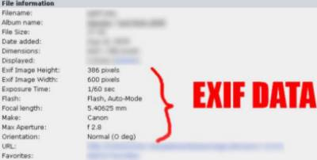
4.12.1 Gestionnaire d'EXIF
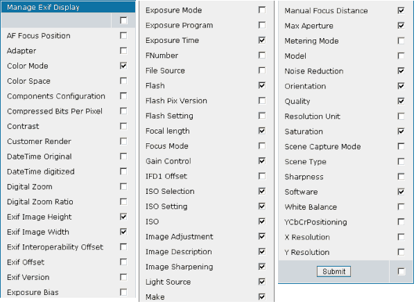
CPG1.4.x (ou supérieur) est livré avec un gestionnaire de données EXIF permettant à l'administrateur de la galerie Coppermine de décider quelles données EXIF seront montrées par Coppermine. Notez: Si les données EXIF n'existent pas dans certaines images, coppermine ne sera bien entendu pas capable de les montrer. Coppermine n'est pas un éditeur de données EXIF - il affiche seulement celles qui existent dans vos images .Pour acceder au gestionnaire d'EXIF, allez dans la page de configuration de Coppermine et cliquez sur le lien de la section Paramètres avancés des images et vignettes "Administrer l'affichafe des EXIFS" à côté de la ligne "Lire les données EXIF dans les fichiers JPEG". Vous pouvez aussi entre directement http://votresite.com/votre_repertoire_coppermine/exifmgr.php dans la barre d'adresse de votre navigateur.
Cochez les cases dans le gestionnaire d'EXIF devant les informations que vous voulez montrer dans la section d'informations sur l'image de Coppermine(si le fichier image contient ces informations).
5. Intégration du script avec votre forum
5.1 Fichiers d'intégration disponibles
Coppermine peut s'intégrer avec les forums suivant (Coppermine et votre forum vont partager la même base de donnée utilisateurs).
- eBlah
- Invision Power Board
- Mambo
- MyBB
- phpBB 2
- PunBB
- SMF
- vBulletin
- XMB
- Xoops2
5.2 Pre-requis
5.2.1 Autentification par cookie
Le loggin d'intégration utilise le cookie de votre forum, donc il ne pourra pas fonctionner si le cookie de votre forum n'est pas visible par Coppermine. Donc, sauf si vous êtes un espert, faites les choses simplement et installez Coppermine et votre forum sur le même domaine. Exemples :
| Cela va fonctionner: | Cela ne va pas fonctionner |
| Forum: http://votresite.com/forum/ Coppermine: http://votresite.com/galerie/ |
Forum: http://forum.votresite.com/ Coppermine: http://galerie.votresite.com/ |
Le chemin du cookie dans la page de configuration du forum devrait être parametré à '/' la ou cette option est disponible.
Important: Le nom du cookie de votre forum et de Coppermine ne doivent pas être les mêmes - ils doivent être différents!
5.2.2 Version autonome d'abord
Pour éviter les confusions, assurez vous de configurer Coppermine et votre forum en fonctionnement autonome en premier. Vérifiez que les deux fonctionnent correctement sans intégration. Testez toutes les fonctions de coppermine (comme les téléchargements, l'enregistrement etc.) lorsque Coppermine est installé, avant même de commencer l'intégration.
5.2.3 Les utilisateur, groupes et images téléchargées par les utilisateurs de Coppermine sont perdues lors de l'intégration
Attention: Si vous avez déjà des utilisateurs et des groupes personnalisés dans votre base de donnée Coppermine lorsque vous activez l'intégration avec votre forum, soyez concients qu'ils vont être perdus. Si vos utilisateurs ont déjà crée des albums privés et téléchargé des images, elles vont être perdues également!
5.2.4 Sauvegarde
Sauvegardez: Il est très important de faire uen sauvegarde de votre base de donnée Coppermine et de vos fichiers avant d'activer l'intégration, vous pourrez ainsi revenir en arrière si elle échoue.
De toute façon vous êtes encouragés à faire une sauvegarde régulière de votre base de donnée, spécialement avant d'appliquer des changements dans le code (installation de mod/hack par exemple).
5.3 Etapes de l'intégration
Depuis cpg1.4.x vous pouvez utiliser le Gestionnaire d'intégration qui vous permettra d'activer/désactiver l'intégration par le biais d'un assistant.
5.3.1 Utilisation du gestionnaire d'intégration (bridge)
Le gestionnaire d'intégration est une nouvelle fonction dans cpg1.4, il n'est pas disponible dans les versions antérieures. A la place d'éditer manuellement les fichiers codes de Coppermine, vous pouvez activer/désactiver l'intégration depuis votre navigateur, en utilisant un assitant. pour démarer le gestionnaire d'intégration, identifiez vous comme administrateur, Choisissez "Utiliatires" dans le menu et le "gestionnaire d'intégration"
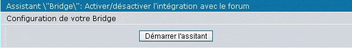
Si vous lancez le gestionnaire d'intégration pour la première fois, il n'y aura qu'un seul bouton qui vous permettra de démarer l'assistant
(Si vous retournez dans le gestionnaire d'intégration plus tard, vous aurez des cases de choix permettant d'activer/désactiver l'intégration) cliquez dessus.
Notez: a chaque étape de l'assistant d'intégration, des informations sont écrites dans la base de donnée de Coppermine. Contrairement à d'autre assistants (la plupars sur votre ordinateur), le gestionnaire d'intégration n'a pas de bouton""annuler"! Une fois que vous avez activé l'intégration et que tout fonctionne bien, vous ne devriez changer aucune valeur juste par curiosité, comme elles seront écrites dans la base de donnée, il se pourrait que l'intégration, qui fonctionnait jusque là, ne fonctionne plus du tout après avoir "joué" avec elles.
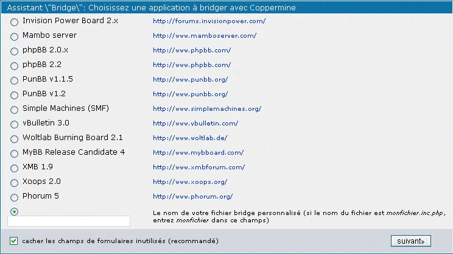
Dans la première étape de l'assistant "choisissez l'application avec laquelle vous souhaitez intégrer Coppermine", vous devez choisir l'application à brideger avec Coppermine. Notez que vous devez avoir cette application déjà installée sur votre serveur, elle doit être correctement configurée et doit fonctionner. N'utilisez pas le gestionnaire d'intégration si vous avez projeté de la faire plus tard .
Si vous avec un fichier personnalisé d'intégration qui n'est pas disponible dans l'assistant, choisissez le bouton radio à côté du champ texte et entrez le nom de votre fichier ici, sans l'extention ".inc.php" (le fichier d'intégration doit être placé dans le sous-répertoire "bridge") de Coppermine.
Cliquez sur "suivant"
L'étape suivante dépends de l'application que vous avez choisi : certaines applications ont besoin que des URLs soient entrées, ou des chemine d'accès. Certaines ont besoins que l'on entre desinformations sur les tables mySQL ou sur les cookies, d'autres pas. L'assistant ne vous "demandera" que les parapètres appropriés pour votre application - si l'un ou l'autre point des explications suivantes ne s'appliquent pas à votre application, ne vous affolez pas - ne suivez que les informations adéquates et cliquez sur "suivant". Toutefois, vous devez comprendre que Coppermine ne peut vérifier que certaines entrées - certaines entrées seront invalidées.
Si un bouton d'annulation () est affiché près d'un champ de formulaire, ce champ n'a pas de valeur par défaut. Il est peut être normal qu'il n'y en ait pas dans un champ, toutefois, rappelez vous que si vous avez "joué" avec le gestionnaire de bridge auparavant, les paramètres précédents qui apparaissent dans un champ ne sont pas corrects - ne sautez pas une étape rapidement sans faire attention à celà. Utilisez le bouton de réinitialisation pour remettre la valeur par défaut (par necessairement "la bonne" valeur par défaut).
5.3.1.1 Choisir une application à intégrer avec Coppermine
- eBlah
- Invision Power Board
- Mambo
- MyBB
- phpBB 2
- PunBB
- SMF
- vBulletin
- XMB
- Xoops2
5.3.1.2 Chemin(s) utilisé par votre forum
- URL du forum
L'adresse URL complète de votre forum (incluant http://, exemple: http://www.votresite.com/forum/) - Chemin relatif du forum
Le chemin relatif d'accès au forum depuis la racine de votre site (Exemple: si votre l'adresse de votre forum est http://www.votresite.com/forum/, entrez "/forum/" dans ce champ) - Chemin relatif du fichier de configuration de votre forum
Chemin relatif vers votre forum, vu depuis le répertoire de Coppermine (exemple: "../forum/" si votre forum se trouve à http://www.votresite.com/forum/ et Coppermine à http://www.votresite.com/gallery/)
5.3.1.3 Paramètres spécifiques de votre forum
- Utiliser les groupes basés sur le nombre de messages ?
Est ce que Coppermine doit importer les groupes spéciaux existant dans le forum ? Si vous délectionnez NON, alors Coppermine utilisera les groupes standards (Administrateur, Enregistrés and Anonymes) ce qui permets une administration plus facile ce qui est recommandé. Vous pourrez changer ces parametres plus tard.
5.3.1.4 activer/désactiver l'intégration du forum
C'est la dernière étape du gestionnaire d'intégration - il récapiltule les paramétrages que vous avez faits dans les étapes précédentes - vous pouvez activer ou désactiver l'intégration ici. Par défaut, l'intégration est paramétrée à "désactivé" après que le gestionnaire d'intégration a été lancé pour la première fois. Vous devrez activer l'intégration avec votre forum uniquement si vous êtes surque votre forum est parametré correctement. Cliquez sur le bouton "Terminer" dans tous les cas pour enfin écrire dans la base de donnée, même si vous laissez le paramétrage actuel (laisser l'intégration sur "désactivé").
- Active l'intégration avec XXX
[cpg1.4.0 ou supérieur requis]
5.3.2 Restauration après une erreur d'intégration
Si vous avez défini de mauvais paramètres dans le gestionnaire d'intégration, votre integration peut échouer, avec pour résultat (dans le pire des cas) une situation l'intégration est activée, mais vous ne pouvez plus vous identifier comme administrateur pour la désactiver à nouveau (par exemple si vous avez défini de mauvais paramétrage de cookie ce qui arrète l'autentification). Pour ces situation le gestionnaire d'intégration comprends une fonction de restauration: si vous n'êtes pas identifié comme administrateur de Coppermine (en fait vous n'êtes pas du tout identifiés) vous pouvez acceder à l'URL de votre gestionnaire d'intégration (http://votresite.com/votre_repertoire_coppermine/bridgemgr.php) en l'entrant manuellement dans la barre d'adresse de votre navigateur, il vous est demandé d'entre vos identifiants administrateur - utilisez les identifiants que vous avez définis lors de l'installation de Coppermine (les identifiants de la version autonome). Celà ne vous identifieras pas, mais désactiveras l'intégration, de sorte que vous puissiez modifier les mauvais paramètres d'intégration. Pour éviter que d'autres essayent de deviner vos identifiants administrateurs, il y a un seuil maximum d'essai inffructueux qui s'incrémente à chaque fois que vous entrez de mauvais identifiants, saisissez donc vos identifiants avec soin.
[cpg1.4.0 ou supérieur requis]
5.3.3 Syncroniser les groupes du forum avec ceux de Coppermine
Identifiez vous comme administrateur sur votre forum. Allez dans la galerie, passez en mode administrateur et cliquez sur le bouton "Groupes". Cela va syncroniser le groupes Coppermine avec ceux de votre forum. Les droits que vous verrez pour chaque groupe seront complêtement désordonnés, prenez le temps de les reparametre correctement.
Chaque fois que vous ajoutez ou supprimez un groupe de votre forum vous devez refaire cette opération afin de maintenir la syncronisation des groupes.
Si vous essayez de vous inden ou de gérer les utilisateurs de Coppermine, vous serez redirigé vers la page correspondante de votre forum. Par contre lorsque l'identification ou la sortie du mode administrateur est faite depuis le forum, vous ne serez pas redirigé automatiquement vers la galerie, le forum n'ayant pas de fonction pour cela. Il vous appartient d'ajouter un lien vers votre galerie sur votre forum.
6. Traduction de Coppermine dans d'autres langues
Coppermine a des fichiers language séparés ce qui facilite grandement la traduction du programme. Les fichiers languages sont palcés dans le répertoire lang . Les fichiers avec le suffixe utf-8 sont des fichiers unicode. Ils sont générés automatiquement par le programme iconv, donc vous n'avez pas besoin de faire de version unicode de votre traduction.
Si vous sélectinnez un fichier language utf-8 comme lague par défaut, le programme pourra sélectionner automatiquement le language en fonction du paramétrage du navigateur de votre visiteur. Par exemple si le fichier language par défaut est danish-utf-8 et qu'un visiteur anglais accède à la galerie, c'est le fichier language english-utf-8 qui sera utilisé par le script.
Si vous avez traduit Coppermine dans une langue pas encore existante, lisez le guide du traducteur et visitez le site web Coppermine sur Sourceforge et suivez les instructions pour soumettre votre fichier langue.
7. Problèmes connus
Les petites bizzareries et minuscules problèmes suivants sont connus et seront fixés dans les futures versions.
- Certains petits textes ne sont disponibles qu'ne anglais, exemple: picEditor. (Problème de langue)
- La documentation (ce document) et la FAQ sont incomplets.
- Les flêches utilisées pour la navigation d'une image à une autre sont inversés dans les fichiers language rtl
- Comme vous êtes en train d'utiliser une version béta de coppermine 1.4, il y a d'autres problèmes connus en discussion sur le forum CPG 1.4 Testing/Bugs. S'il vous plais, référez vous à ce forum pour plus d'informations.
8. Credits
8.1 L'equipe Coppermine
| Developeur | Pseudo | Role/Position | Status |
| Joachim Müller | gaugau | Chef de Projet | actif |
| Dr Tarique Sani | tarique | Développeur principal | actif |
| Abbas Ali | abbas | Developeur | actif |
| Aditya Mooley | Aditya | Developeur | actif |
| Maarten Hagoort | DJ Maze | Developeur (nuke team) | actif |
| Donovan Bray | donnoman | Developeur | actif |
| Eyal Zvi | EZ | Developeur | actif |
| Tommy Atkinson | Nibbler | Developeur | actif |
| Christopher Brown-Floyd | omniscientdeveloper | Developeur | actif |
| Clive Leech | casper | Supporter | actif |
| Dave Kazebeer | kegobeer | Supporter | actif |
| Thu Tu | TranzNDance | Supporter | actif |
| Andreas Ellsel | Andi | Testeur | actif |
| Developeur | Pseudo | Role/Position | Status |
| Grégory Demar | Greg | Cr√©ateur originel de Coppermine | retir√© |
| Jack | datajack | Developeur | retiré |
| DJ Axion | djaxion | Developeur | retiré |
| Scott Gahres | gtroll | Developeur | retiré |
| Hyperion | hyperion01 | Developeur | retiré |
| John Asendorf | jasendorf | Developeur | retiré |
| Jay Hao-En Liu | Oasis | Developeur | retiré |
| Timothy | skybax | Developeur | retiré |
| David Holm | wormie_dk | Developeur | retiré |
| Mark Zerr | zarsky99 | Testeur | retiré |
| mitirapa | mitirapa | Porter (Cross Platform Devel.) | retiré |
| Moorey | moorey | Web Designer | retiré |
8.2 Contributeurs
| DaMysterious | DaMysterious a crée beaucoups de thèmes fantastiques pour Coppermine |
| Nanobot | Doug a réalisé le fichier d'intégration pour vBulletin v3 |
| Girish Nair | Girish a contribué à la fonctione film strip |
| Jason Kawaja | Jason a réalisé le hack memberlist |
8.3 Coppermine utilise le code des logiciels libres suivant :
phpBB
Auteur: phpBBGroup
URL: http://www.phpbb.com/
phpMyAdmin
Auteur: phpMyAdmin devel team
URL: http://www.phpmyadmin.net/
phpPhotoAlbum
Auteur: Henning Støverud
E-mail: henning AT stoverud DOT com
URL: http://www.stoverud.com/PHPhotoalbum/
DOM Tooltip 0.6.0
Auteur: Dan Allen
E-mail: dan AT mojavelinux DOT com
URL: http://www.mojavelinux.com/forum/viewtopic.php?t=127
Note: DOM Tooltip, which is being used with the theme "styleguide" only, is released under LGPL
TAR/GZIP/ZIP Archive Classes
Auteur: Devin Doucette
E-mail: darksnoopy AT shaw DOT ca
Exifixer
Auteur: Jake Olefsky
URL: http://www.offsky.com/software/exif/index.php
Codelifter Slideshow
URL: http://www.codelifter.com
PHPMailer
Auteur: PHPMailer Team
URL: http://phpmailer.sourceforge.net/
PHP Calendar Class Version 1.4
Auteur: David Wilkinson
E-mail: davidw AT cascade DOT org DOT uk
URL: http://www.cascade.org.uk/software/php/calendar/
8.4 Copyright et décharge de responsabilité
Cette application est un logiciel opensource publié sous licence GPL.
Parce que l'utilisation de ce Programme est libre et gratuite, aucune garantie n'est fournie, comme le permet la loi. Sauf mention écrite, les détenteurs du copyright et/ou les tiers fournissent le Programme en l'état, sans aucune sorte de garantie explicite ou implicite, y compris les garanties de commercialisation ou d'adaptation dans un but particulier. Vous assumez tous les risques quant à la qualité et aux effets du Programme. Si le Programme est défectueux, Vous assumez le coût de tous les services, corrections ou réparations nécessaires.
Coppermine Photo Galleryest sous Copyright © 2002 - 2005 Grégory DEMAR et de l'√©quipe de d√©veloppement de Coppermine, Tous droits r√©serv√©s.